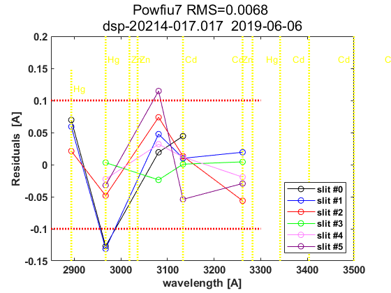

Contents
Brewer Evaluation
clear all;
file_setup='arenos2019_setup';
eval(file_setup);
Cal.n_inst=find(Cal.brw==017);
Cal.file_latex=fullfile('.','latex',Cal.brw_str{Cal.n_inst});
Cal.dir_figs=fullfile('latex',filesep(),Cal.brw_str{Cal.n_inst},...
filesep(),[Cal.brw_str{Cal.n_inst},'_figures'],filesep());
mkdir(Cal.dir_figs);
try
save(Cal.file_save,'-Append','Cal');
catch exception
fprintf('Error: %s\n Initializing data for Brewer %s\n',exception.message,Cal.brw_name{Cal.n_inst});
save(Cal.file_save);
end
ans =
1×1 cell array
{'IZO#185'}
ans =
21×9 cell array
Columns 1 through 5
{'TSK#005'} {[ 5]} {[2]} {[0]} {'005'}
{'IOS#017'} {[ 17]} {[2]} {[0]} {'017'}
{'SCO#033'} {[ 33]} {[2]} {[0]} {'033'}
{'MAD#070'} {[ 70]} {[4]} {[0]} {'070'}
{'UM#075' } {[ 75]} {[4]} {[0]} {'075'}
{'POR#102'} {[102]} {[4]} {[0]} {'102'}
{'MUR#117'} {[117]} {[4]} {[0]} {'117'}
{'UM#126' } {[126]} {[4]} {[0]} {'126'}
{'ARE#150'} {[150]} {[3]} {[0]} {'150'}
{'COR#151'} {[151]} {[4]} {[0]} {'151'}
{'K&Z#158'} {[158]} {[3]} {[0]} {'158'}
{'WRC#163'} {[163]} {[3]} {[0]} {'163'}
{'ZAR#166'} {[166]} {[4]} {[0]} {'166'}
{'UM#172' } {[172]} {[3]} {[0]} {'172'}
{'JAP#174'} {[174]} {[3]} {[0]} {'174'}
{'IZO#185'} {[185]} {[3]} {[0]} {'185'}
{'MAD#186'} {[186]} {[3]} {[0]} {'186'}
{'CAN#190'} {[190]} {[3]} {[0]} {'190'}
{'TAM#201'} {[201]} {[3]} {[0]} {'201'}
{'DNK#202'} {[202]} {[3]} {[0]} {'202'}
{'DNK#228'} {[228]} {[3]} {[0]} {'228'}
Columns 6 through 9
{'..\005\ICF15117…'} {'..\005\ICF15117…'} {'1838'} {'1838'}
{'..\017\ICF15315…'} {'..\017\ICF15315…'} {'2170'} {'2097'}
{'..\033\ICF15617…'} {'..\033\IOS15617…'} {'2325'} {'2325'}
{'..\070\ICF15617…'} {'..\070\IOS15617…'} {'1685'} {'1685'}
{'..\075\ICF15017…'} {'..\075\ICF15017…'} {'1714'} {'1714'}
{'..\102\ICF15517…'} {'..\102\ICF15517…'} {'2718'} {'2718'}
{'..\117\ICF15517…'} {'..\117\IOS15517…'} {'1620'} {'1620'}
{'..\126\icf15517…'} {'..\126\ICF15517…'} {'1710'} {'1710'}
{'..\150\ICF15617…'} {'..\150\ICF15617…'} {'0322'} {'0322'}
{'..\151\ICF15317…'} {'..\151\IOS15317…'} {'1880'} {'1880'}
{'..\158\ICF21218…'} {'..\158\ICF21218…'} {'0558'} {'0558'}
{'..\163\ICF20118…'} {'..\163\ICF20118…'} {'0274'} {'0274'}
{'..\166\ICF15217…'} {'..\166\IOS15717…'} {'1955'} {'1955'}
{'..\172\ICF15117…'} {'..\172\ICF15117…'} {'0444'} {'0444'}
{'..\174\ICF20718…'} {'..\174\ICF20718…'} {'0605'} {'0605'}
{'..\185\config18…'} {'..\185\config18…'} {'0365'} {'0363'}
{'..\186\ICF15317…'} {'..\186\IOS15317…'} {'0315'} {'0315'}
{'..\190\ICF11419…'} {'..\190\ICF11419…'} {'0410'} {'0410'}
{'..\201\ICF14315…'} {'..\201\ICF14315…'} {'0320'} {'0320'}
{'..\202\ICF15017…'} {'..\202\ICF15017…'} {'0270'} {'0270'}
{'..\228\ICF15017…'} {'..\228\ICF15017…'} {'0242'} {'0242'}
configuration files
close all
[config_def,TCdef,DTdef,ETCdef,A1def,ATdef]=read_icf(Cal.brw_config_files{Cal.n_inst,2});
[config_orig,TCorig,DTorig,ETCorig,A1orig,ATorig]=read_icf(Cal.brw_config_files{Cal.n_inst,1});
Station.OSC=680;
Station.name='';
Station.lat=67;
Station.long=50;
Station.meanozo=350;
cal_step={}; sc_avg={}; sc_raw={}; Args={};
Sun_scan: Before Campaign
close all
[cal_step{1},sc_avg{1},sc_raw{1},Args{1}]=sc_report(Cal.brw_str{Cal.n_inst},Cal.brw_config_files{Cal.n_inst,1},...
'date_range',datenum(Cal.Date.cal_year,1,[1 159]),...
'CSN_orig',config_orig(14),'OSC',Station.OSC,...
'control_flag',1,'residual_limit',35,...
'hg_time',15,'one_flag',1);
017
Sun_scan: Campaign
[cal_step{2},sc_avg{2},sc_raw{2},Args{2}]=sc_report(Cal.brw_str{Cal.n_inst},Cal.brw_config_files{Cal.n_inst,2},...
'date_range',datenum(Cal.Date.cal_year,1,Cal.calibration_days{Cal.n_inst,1}([1 end])),...
'CSN_orig',config_def(14),'OSC',Station.OSC,...
'control_flag',1,'residual_limit',15,...
'hg_time',5,'one_flag',1);
017
try
ix=sort(findobj('tag','SC_INDIVIDUAL')); figure(ix); set(get(gca,'title'),'FontSize',8);
printfiles_report(ix',Cal.dir_figs,'aux_pattern',ix,'FontSize',.9,'Width',8.5,'Height',7);
ix=sort(findobj('tag','Final_SC_Calculation'));
if length(ix)>1
Width=8; Height=6;
for i=1:length(ix), figure(ix(i)); set(get(gca,'title'),'FontSize',8); end
else
Width=13; Height=8;
end
printfiles_report(ix',Cal.dir_figs,'aux_pattern',ix,'Width',Width,'Height',Height);
catch
disp('No Sun Scan plots');
end
close all
No Sun Scan plots
Definicion de variables: SC
if length(cal_step)>1
d_p=[length(cal_step)-1 length(cal_step)]; tags={'','new'};
else
d_p=1; tags={'new'};
end
idx=1; cal_step_error={};
for t=d_p
cal_step_error{t}=round(mean([abs(cal_step{t}(2)-cal_step{t}(3)),abs(cal_step{t}(2)-cal_step{t}(4))]));
latexcmd(fullfile(Cal.file_latex,['cal_wavelengthSC',tags{idx},'_',Cal.brw_str{Cal.n_inst}]),...
['\numSC',tags{idx}],size(sc_avg{t},1),...
['\CALCSTEP',tags{idx}],round(cal_step{t}(1)),...
['\calsteperror',tags{idx}],cal_step_error{t});
idx=idx+1;
end
load(Cal.file_save,'sunscan');
sunscan{Cal.n_inst}.cal_step=cal_step;
sunscan{Cal.n_inst}.cal_step_error=cal_step_error;
sunscan{Cal.n_inst}.sc_avg=sc_avg; sunscan{Cal.n_inst}.sc_raw=sc_raw;
sunscan{Cal.n_inst}.info=Args;
save(Cal.file_save,'-APPEND','sunscan');
dsp calibration
res={}; detail={}; DSP_QUAD={}; QUAD_SUM={}; QUAD_DETAIL={};
CUBIC_SUM={}; CUBIC_DETAIL={}; salida={}; CSN_icf={};
l=dir(fullfile('DSP',[Cal.brw_str{Cal.n_inst},'*']));
ldsp=cellstr(cat(1,l.name));
ldsp=ldsp(end-3:end)
for jj=1:length(ldsp)
if jj==length(ldsp),confign=2; else confign=1; end
try
[res{jj},detail{jj},DSP_QUAD{jj},QUAD_SUM{jj},QUAD_DETAIL{jj},...
CUBIC_SUM{jj},CUBIC_DETAIL{jj},salida{jj},CSN_icf{jj},...
]=dspreport(Cal,'dsp_dir',fullfile('DSP',ldsp{jj}),'config_n',1);
catch
warning(sprintf('Error en %s. DSP: %s',Cal.brw_name{Cal.n_inst},ldsp{jj}));
res{jj}=NaN*ones(15,9,2); detail{jj}=NaN*ones(7,6,15,2); QUAD_DETAIL{jj}=NaN;
end
datefile =
735802
now:W1020314.017
now:W3020314.017
now:W7020314.017
now:W8020314.017
now:W1120314.017
now:W3120314.017
now:W7120314.017
now:W8120314.017
now:W9120314.017
now:W1220314.017
now:W3220314.017
now:W7220314.017
now:W8220314.017
now:W9220314.017
now:W3320314.017
now:W7320314.017
now:W8320314.017
now:W9320314.017
now:W3420314.017
now:W7420314.017
now:W8420314.017
now:W9420314.017
now:W3520314.017
now:W7520314.017
now:W8520314.017
now:W9520314.017
lines_dsp_20214__017
saving alldsp to DSP\017_14_203\alldsp_20214_017.017
saving normaldsp to DSP\017_14_203\dspnorm_20214_017.017 as brewer compatible file
Use polyval(pwl(2,:),wl) for calculating normal wavelengths
Saving ozonecoeffs to DSP\017_14_203\opos20214_017.017
853 WL(A) 3020.79 3062.54 3100.06 3134.58 3167.58 3199.61
Res(A) 7.29 10.65 10.27 10.89 10.89 10.47
O3abs(1/cm) 3.1480 1.7908 1.0068 0.6786 0.3748 0.2969 O3: 0.3478
Daumt O3abs(1/cm) 3.1525 1.7847 0.9984 0.6719 0.3680 0.2970 O3: 0.3577
So2abs(1/cm) 8.2903 5.5188 2.3520 1.9704 1.0476 0.6246
Bremen O3abs(1/cm) 3.1449 1.7882 1.0040 0.6815 0.3731 0.2982 O3: 0.3493
Nicolet 1e4*Rayabs(1/cm) 5131.8 4835.4 4587.6 4373.6 4180.9 4004.2 R: 9.8258
Bates(fix) 1e4*Rayabs(1/cm) 0.0 4870.0 4620.0 4410.0 4220.0 4040.0 R: -1.0000
Bodhaine 1e4*Rayabs(1/cm) 5127.7 4833.4 4587.1 4374.3 4182.5 4006.4 R: 9.4497
I0(mW m^-2nm^-1) 14975.55 9419.99 7388.40 4918.16 4066.48 3231.61 ETC: 1477
Ozone offset due to Rayleigh (RayCOeff/O3Coeff): -2.8 DU
Ozone offset due to Rayleigh (Bodhaine): -3.0 DU
Ratio Ozone for So2(A3)= 1.1670, So2/O3(A2)= 2.6718
O3 factor from Bass & Paur to Daumont = 0.9722
O3 factor from Bass & Paur to Bremen = 0.9956
854 WL(A) 3020.87 3062.61 3100.13 3134.66 3167.66 3199.68
Res(A) 7.29 10.65 10.27 10.89 10.89 10.47
O3abs(1/cm) 3.1453 1.7894 1.0065 0.6784 0.3748 0.2966 O3: 0.3469
Daumt O3abs(1/cm) 3.1497 1.7834 0.9981 0.6719 0.3679 0.2967 O3: 0.3570
So2abs(1/cm) 8.3193 5.5474 2.3587 1.9588 1.0489 0.6225
Bremen O3abs(1/cm) 3.1422 1.7867 1.0037 0.6814 0.3731 0.2979 O3: 0.3485
Nicolet 1e4*Rayabs(1/cm) 5131.2 4834.9 4587.1 4373.2 4180.5 4003.8 R: 9.8236
Bates(fix) 1e4*Rayabs(1/cm) 0.0 4870.0 4620.0 4410.0 4220.0 4040.0 R: -1.0000
Bodhaine 1e4*Rayabs(1/cm) 5127.2 4832.9 4586.6 4373.8 4182.1 4006.1 R: 9.4462
I0(mW m^-2nm^-1) 14975.55 9412.99 7358.10 4913.92 4056.10 3225.93 ETC: 1462
Ozone offset due to Rayleigh (RayCOeff/O3Coeff): -2.8 DU
Ozone offset due to Rayleigh (Bodhaine): -3.0 DU
Ratio Ozone for So2(A3)= 1.1643, So2/O3(A2)= 2.6919
O3 factor from Bass & Paur to Daumont = 0.9718
O3 factor from Bass & Paur to Bremen = 0.9954
855 WL(A) 3020.95 3062.69 3100.21 3134.73 3167.73 3199.75
Res(A) 7.29 10.65 10.27 10.89 10.89 10.47
O3abs(1/cm) 3.1422 1.7879 1.0063 0.6782 0.3748 0.2962 O3: 0.3461
Daumt O3abs(1/cm) 3.1468 1.7820 0.9978 0.6718 0.3679 0.2964 O3: 0.3562
So2abs(1/cm) 8.3474 5.5736 2.3660 1.9466 1.0502 0.6204
Bremen O3abs(1/cm) 3.1394 1.7853 1.0034 0.6813 0.3731 0.2975 O3: 0.3477
Nicolet 1e4*Rayabs(1/cm) 5130.6 4834.4 4586.6 4372.7 4180.1 4003.4 R: 9.8215
Bates(fix) 1e4*Rayabs(1/cm) 0.0 4870.0 4620.0 4410.0 4220.0 4040.0 R: -1.0000
Bodhaine 1e4*Rayabs(1/cm) 5126.6 4832.4 4586.1 4373.4 4181.7 4005.7 R: 9.4459
I0(mW m^-2nm^-1) 14975.55 9406.01 7336.94 4909.68 4045.74 3220.10 ETC: 1456
Ozone offset due to Rayleigh (RayCOeff/O3Coeff): -2.8 DU
Ozone offset due to Rayleigh (Bodhaine): -3.0 DU
Ratio Ozone for So2(A3)= 1.1616, So2/O3(A2)= 2.7102
O3 factor from Bass & Paur to Daumont = 0.9716
O3 factor from Bass & Paur to Bremen = 0.9954
856 WL(A) 3021.02 3062.76 3100.28 3134.80 3167.80 3199.82
Res(A) 7.29 10.65 10.27 10.89 10.89 10.47
O3abs(1/cm) 3.1390 1.7863 1.0061 0.6779 0.3748 0.2957 O3: 0.3452
Daumt O3abs(1/cm) 3.1439 1.7807 0.9975 0.6717 0.3679 0.2961 O3: 0.3554
So2abs(1/cm) 8.3744 5.5995 2.3736 1.9346 1.0515 0.6181
Bremen O3abs(1/cm) 3.1366 1.7838 1.0031 0.6811 0.3731 0.2972 O3: 0.3469
Nicolet 1e4*Rayabs(1/cm) 5130.1 4833.9 4586.1 4372.3 4179.7 4003.0 R: 9.8193
Bates(fix) 1e4*Rayabs(1/cm) 0.0 4870.0 4620.0 4410.0 4220.0 4040.0 R: -1.0000
Bodhaine 1e4*Rayabs(1/cm) 5126.0 4831.9 4585.6 4373.0 4181.2 4005.3 R: 9.4429
I0(mW m^-2nm^-1) 14975.55 9399.04 7317.10 4905.45 4035.40 3210.38 ETC: 1444
Ozone offset due to Rayleigh (RayCOeff/O3Coeff): -2.8 DU
Ozone offset due to Rayleigh (Bodhaine): -3.0 DU
Ratio Ozone for So2(A3)= 1.1583, So2/O3(A2)= 2.7293
O3 factor from Bass & Paur to Daumont = 0.9712
O3 factor from Bass & Paur to Bremen = 0.9951
857 WL(A) 3021.10 3062.84 3100.35 3134.87 3167.87 3199.89
Res(A) 7.29 10.65 10.27 10.89 10.89 10.47
O3abs(1/cm) 3.1359 1.7846 1.0059 0.6776 0.3748 0.2952 O3: 0.3442
Daumt O3abs(1/cm) 3.1410 1.7793 0.9972 0.6716 0.3680 0.2957 O3: 0.3546
So2abs(1/cm) 8.3976 5.6249 2.3812 1.9227 1.0527 0.6159
Bremen O3abs(1/cm) 3.1338 1.7823 1.0028 0.6810 0.3732 0.2968 O3: 0.3460
Nicolet 1e4*Rayabs(1/cm) 5129.5 4833.4 4585.7 4371.9 4179.3 4002.6 R: 9.8172
Bates(fix) 1e4*Rayabs(1/cm) 0.0 4870.0 4620.0 4410.0 4220.0 4040.0 R: -1.0000
Bodhaine 1e4*Rayabs(1/cm) 5125.5 4831.4 4585.2 4372.5 4180.8 4004.9 R: 9.4414
I0(mW m^-2nm^-1) 14975.55 9392.08 7297.94 4901.22 4025.09 3199.56 ETC: 1431
Ozone offset due to Rayleigh (RayCOeff/O3Coeff): -2.9 DU
Ozone offset due to Rayleigh (Bodhaine): -3.0 DU
Ratio Ozone for So2(A3)= 1.1550, So2/O3(A2)= 2.7484
O3 factor from Bass & Paur to Daumont = 0.9708
O3 factor from Bass & Paur to Bremen = 0.9949
858 WL(A) 3021.17 3062.91 3100.43 3134.95 3167.94 3199.96
Res(A) 7.29 10.65 10.27 10.89 10.89 10.47
O3abs(1/cm) 3.1328 1.7831 1.0056 0.6774 0.3749 0.2947 O3: 0.3432
Daumt O3abs(1/cm) 3.1380 1.7778 0.9969 0.6714 0.3680 0.2954 O3: 0.3537
So2abs(1/cm) 8.4186 5.6503 2.3888 1.9108 1.0540 0.6136
Bremen O3abs(1/cm) 3.1309 1.7808 1.0025 0.6808 0.3732 0.2965 O3: 0.3451
Nicolet 1e4*Rayabs(1/cm) 5129.0 4832.9 4585.2 4371.4 4178.9 4002.3 R: 9.8151
Bates(fix) 1e4*Rayabs(1/cm) 0.0 4870.0 4620.0 4410.0 4220.0 4040.0 R: -1.0000
Bodhaine 1e4*Rayabs(1/cm) 5124.9 4830.9 4584.7 4372.1 4180.4 4004.5 R: 9.4410
I0(mW m^-2nm^-1) 14975.55 9385.13 7279.42 4897.00 4014.80 3188.78 ETC: 1419
Ozone offset due to Rayleigh (RayCOeff/O3Coeff): -2.9 DU
Ozone offset due to Rayleigh (Bodhaine): -3.0 DU
Ratio Ozone for So2(A3)= 1.1517, So2/O3(A2)= 2.7673
O3 factor from Bass & Paur to Daumont = 0.9702
O3 factor from Bass & Paur to Bremen = 0.9945
859 WL(A) 3021.25 3062.99 3100.50 3135.02 3168.02 3200.03
Res(A) 7.29 10.65 10.27 10.89 10.89 10.47
O3abs(1/cm) 3.1300 1.7816 1.0053 0.6770 0.3749 0.2942 O3: 0.3420
Daumt O3abs(1/cm) 3.1350 1.7764 0.9966 0.6713 0.3680 0.2950 O3: 0.3527
So2abs(1/cm) 8.4387 5.6731 2.3969 1.8985 1.0553 0.6113
Bremen O3abs(1/cm) 3.1280 1.7793 1.0022 0.6806 0.3733 0.2961 O3: 0.3441
Nicolet 1e4*Rayabs(1/cm) 5128.4 4832.4 4584.7 4371.0 4178.5 4001.9 R: 9.8129
Bates(fix) 1e4*Rayabs(1/cm) 0.0 4870.0 4620.0 4410.0 4220.0 4040.0 R: -1.0000
Bodhaine 1e4*Rayabs(1/cm) 5124.4 4830.4 4584.2 4371.7 4180.0 4004.2 R: 9.4358
I0(mW m^-2nm^-1) 14975.55 9378.19 7261.50 4892.77 4004.54 3178.02 ETC: 1408
Ozone offset due to Rayleigh (RayCOeff/O3Coeff): -2.9 DU
Ozone offset due to Rayleigh (Bodhaine): -3.1 DU
Ratio Ozone for So2(A3)= 1.1482, So2/O3(A2)= 2.7844
O3 factor from Bass & Paur to Daumont = 0.9696
O3 factor from Bass & Paur to Bremen = 0.9940
860 WL(A) 3021.32 3063.06 3100.57 3135.09 3168.09 3200.10
Res(A) 7.29 10.65 10.27 10.89 10.89 10.47
O3abs(1/cm) 3.1272 1.7801 1.0050 0.6766 0.3750 0.2937 O3: 0.3409
Daumt O3abs(1/cm) 3.1320 1.7749 0.9963 0.6711 0.3681 0.2946 O3: 0.3517
So2abs(1/cm) 8.4571 5.6956 2.4053 1.8864 1.0565 0.6090
Bremen O3abs(1/cm) 3.1251 1.7777 1.0019 0.6803 0.3733 0.2956 O3: 0.3430
Nicolet 1e4*Rayabs(1/cm) 5127.9 4831.9 4584.3 4370.6 4178.0 4001.5 R: 9.8108
Bates(fix) 1e4*Rayabs(1/cm) 0.0 4870.0 4620.0 4410.0 4220.0 4040.0 R: -1.0000
Bodhaine 1e4*Rayabs(1/cm) 5123.8 4829.9 4583.8 4371.2 4179.6 4003.8 R: 9.4357
I0(mW m^-2nm^-1) 14975.55 9371.26 7244.17 4888.56 3994.30 3167.28 ETC: 1397
Ozone offset due to Rayleigh (RayCOeff/O3Coeff): -2.9 DU
Ozone offset due to Rayleigh (Bodhaine): -3.1 DU
Ratio Ozone for So2(A3)= 1.1448, So2/O3(A2)= 2.8013
O3 factor from Bass & Paur to Daumont = 0.9692
O3 factor from Bass & Paur to Bremen = 0.9938
861 WL(A) 3021.40 3063.14 3100.65 3135.17 3168.16 3200.17
Res(A) 7.29 10.65 10.27 10.89 10.88 10.47
O3abs(1/cm) 3.1241 1.7785 1.0047 0.6762 0.3751 0.2932 O3: 0.3398
Daumt O3abs(1/cm) 3.1289 1.7735 0.9960 0.6708 0.3681 0.2942 O3: 0.3507
So2abs(1/cm) 8.4718 5.7175 2.4138 1.8744 1.0578 0.6066
Bremen O3abs(1/cm) 3.1222 1.7761 1.0016 0.6800 0.3734 0.2952 O3: 0.3420
Nicolet 1e4*Rayabs(1/cm) 5127.3 4831.4 4583.8 4370.1 4177.6 4001.1 R: 9.8086
Bates(fix) 1e4*Rayabs(1/cm) 0.0 4870.0 4620.0 4410.0 4220.0 4040.0 R: -1.0000
Bodhaine 1e4*Rayabs(1/cm) 5123.3 4829.4 4583.3 4370.8 4179.2 4003.4 R: 9.4329
I0(mW m^-2nm^-1) 14941.75 9364.35 7227.38 4884.34 3984.08 3156.57 ETC: 1386
Ozone offset due to Rayleigh (RayCOeff/O3Coeff): -2.9 DU
Ozone offset due to Rayleigh (Bodhaine): -3.1 DU
Ratio Ozone for So2(A3)= 1.1413, So2/O3(A2)= 2.8179
O3 factor from Bass & Paur to Daumont = 0.9690
O3 factor from Bass & Paur to Bremen = 0.9938
862 WL(A) 3021.47 3063.21 3100.72 3135.24 3168.23 3200.24
Res(A) 7.29 10.65 10.27 10.89 10.88 10.47
O3abs(1/cm) 3.1208 1.7769 1.0045 0.6758 0.3752 0.2926 O3: 0.3387
Daumt O3abs(1/cm) 3.1258 1.7720 0.9957 0.6706 0.3682 0.2937 O3: 0.3496
So2abs(1/cm) 8.4847 5.7392 2.4223 1.8624 1.0590 0.6042
Bremen O3abs(1/cm) 3.1193 1.7745 1.0013 0.6797 0.3735 0.2947 O3: 0.3408
Nicolet 1e4*Rayabs(1/cm) 5126.8 4830.9 4583.3 4369.7 4177.2 4000.7 R: 9.8065
Bates(fix) 1e4*Rayabs(1/cm) 0.0 4870.0 4620.0 4410.0 4220.0 4040.0 R: -1.0000
Bodhaine 1e4*Rayabs(1/cm) 5122.7 4828.9 4582.8 4370.4 4178.8 4003.0 R: 9.4308
I0(mW m^-2nm^-1) 14880.33 9357.44 7208.87 4880.13 3973.89 3146.86 ETC: 1376
Ozone offset due to Rayleigh (RayCOeff/O3Coeff): -2.9 DU
Ozone offset due to Rayleigh (Bodhaine): -3.1 DU
Ratio Ozone for So2(A3)= 1.1376, So2/O3(A2)= 2.8349
O3 factor from Bass & Paur to Daumont = 0.9688
O3 factor from Bass & Paur to Bremen = 0.9937
863 WL(A) 3021.55 3063.29 3100.79 3135.31 3168.30 3200.32
Res(A) 7.29 10.65 10.27 10.89 10.88 10.47
O3abs(1/cm) 3.1174 1.7751 1.0042 0.6753 0.3753 0.2920 O3: 0.3375
Daumt O3abs(1/cm) 3.1227 1.7704 0.9954 0.6703 0.3683 0.2932 O3: 0.3485
So2abs(1/cm) 8.4965 5.7585 2.4311 1.8500 1.0602 0.6017
Bremen O3abs(1/cm) 3.1163 1.7729 1.0010 0.6794 0.3736 0.2943 O3: 0.3397
Nicolet 1e4*Rayabs(1/cm) 5126.2 4830.4 4582.9 4369.2 4176.8 4000.3 R: 9.8043
Bates(fix) 1e4*Rayabs(1/cm) 0.0 4870.0 4620.0 4410.0 4220.0 4040.0 R: -1.0000
Bodhaine 1e4*Rayabs(1/cm) 5122.2 4828.4 4582.4 4369.9 4178.4 4002.6 R: 9.4282
I0(mW m^-2nm^-1) 14819.76 9350.55 7189.65 4875.93 3963.72 3143.11 ETC: 1375
Ozone offset due to Rayleigh (RayCOeff/O3Coeff): -2.9 DU
Ozone offset due to Rayleigh (Bodhaine): -3.1 DU
Ratio Ozone for So2(A3)= 1.1334, So2/O3(A2)= 2.8507
O3 factor from Bass & Paur to Daumont = 0.9684
O3 factor from Bass & Paur to Bremen = 0.9935
saving powfiu7 to DSP\017_14_203\dsp_20214_017.017
freecoef =
4
freecoef =
9
freecoef =
9
freecoef =
9
freecoef =
9
freecoef =
9
freecoef =
9
freecoef =
9
freecoef =
9
freecoef =
9
saving data to file:DSP\017_14_203\dsp_20214_017.017
Use brstps2 to calculate steps and wavelengths
Saving ozonecoeffs to DSP\017_14_203\opos_pow7_20214_017.017
853 WL(A) 3020.89 3062.57 3100.03 3134.59 3167.55 3199.58
Res(A) 7.28 10.64 10.27 10.89 10.89 10.48
O3abs(1/cm) 3.1443 1.7903 1.0069 0.6786 0.3748 0.2971 O3: 0.3481
Daumt O3abs(1/cm) 3.1488 1.7843 0.9985 0.6719 0.3680 0.2971 O3: 0.3579
So2abs(1/cm) 8.3283 5.5290 2.3489 1.9701 1.0469 0.6254
Bremen O3abs(1/cm) 3.1413 1.7877 1.0042 0.6815 0.3731 0.2983 O3: 0.3496
Nicolet 1e4*Rayabs(1/cm) 5131.0 4835.3 4587.8 4373.6 4181.1 4004.3 R: 9.8228
Bates(fix) 1e4*Rayabs(1/cm) 0.0 4870.0 4620.0 4410.0 4220.0 4040.0 R: -1.0000
Bodhaine 1e4*Rayabs(1/cm) 5127.0 4833.3 4587.3 4374.3 4182.7 4006.6 R: 9.4466
I0(mW m^-2nm^-1) 14975.55 9417.60 7402.38 4918.03 4071.67 3233.77 ETC: 1483
Ozone offset due to Rayleigh (RayCOeff/O3Coeff): -2.8 DU
Ozone offset due to Rayleigh (Bodhaine): -3.0 DU
Ratio Ozone for So2(A3)= 1.1669, So2/O3(A2)= 2.6851
O3 factor from Bass & Paur to Daumont = 0.9725
O3 factor from Bass & Paur to Bremen = 0.9958
854 WL(A) 3020.97 3062.64 3100.10 3134.66 3167.62 3199.65
Res(A) 7.28 10.64 10.27 10.89 10.89 10.48
O3abs(1/cm) 3.1412 1.7889 1.0066 0.6784 0.3748 0.2967 O3: 0.3473
Daumt O3abs(1/cm) 3.1459 1.7829 0.9982 0.6719 0.3680 0.2968 O3: 0.3573
So2abs(1/cm) 8.3563 5.5569 2.3556 1.9585 1.0482 0.6232
Bremen O3abs(1/cm) 3.1385 1.7863 1.0039 0.6814 0.3731 0.2980 O3: 0.3488
Nicolet 1e4*Rayabs(1/cm) 5130.5 4834.8 4587.3 4373.2 4180.7 4003.9 R: 9.8204
Bates(fix) 1e4*Rayabs(1/cm) 0.0 4870.0 4620.0 4410.0 4220.0 4040.0 R: -1.0000
Bodhaine 1e4*Rayabs(1/cm) 5126.4 4832.8 4586.8 4373.8 4182.3 4006.2 R: 9.4447
I0(mW m^-2nm^-1) 14975.55 9410.60 7371.96 4913.79 4061.28 3228.15 ETC: 1468
Ozone offset due to Rayleigh (RayCOeff/O3Coeff): -2.8 DU
Ozone offset due to Rayleigh (Bodhaine): -3.0 DU
Ratio Ozone for So2(A3)= 1.1643, So2/O3(A2)= 2.7045
O3 factor from Bass & Paur to Daumont = 0.9721
O3 factor from Bass & Paur to Bremen = 0.9956
855 WL(A) 3021.04 3062.71 3100.17 3134.73 3167.69 3199.72
Res(A) 7.28 10.64 10.27 10.89 10.89 10.48
O3abs(1/cm) 3.1380 1.7874 1.0064 0.6782 0.3748 0.2963 O3: 0.3465
Daumt O3abs(1/cm) 3.1430 1.7816 0.9979 0.6718 0.3679 0.2965 O3: 0.3565
So2abs(1/cm) 8.3830 5.5828 2.3625 1.9463 1.0495 0.6211
Bremen O3abs(1/cm) 3.1357 1.7848 1.0036 0.6813 0.3731 0.2976 O3: 0.3481
Nicolet 1e4*Rayabs(1/cm) 5129.9 4834.3 4586.8 4372.7 4180.3 4003.5 R: 9.8179
Bates(fix) 1e4*Rayabs(1/cm) 0.0 4870.0 4620.0 4410.0 4220.0 4040.0 R: -1.0000
Bodhaine 1e4*Rayabs(1/cm) 5125.9 4832.3 4586.3 4373.4 4181.9 4005.8 R: 9.4419
I0(mW m^-2nm^-1) 14975.55 9403.62 7346.53 4909.55 4050.90 3222.37 ETC: 1458
Ozone offset due to Rayleigh (RayCOeff/O3Coeff): -2.8 DU
Ozone offset due to Rayleigh (Bodhaine): -3.0 DU
Ratio Ozone for So2(A3)= 1.1615, So2/O3(A2)= 2.7227
O3 factor from Bass & Paur to Daumont = 0.9717
O3 factor from Bass & Paur to Bremen = 0.9954
856 WL(A) 3021.12 3062.79 3100.25 3134.80 3167.76 3199.79
Res(A) 7.28 10.64 10.27 10.89 10.89 10.48
O3abs(1/cm) 3.1349 1.7857 1.0062 0.6779 0.3748 0.2959 O3: 0.3456
Daumt O3abs(1/cm) 3.1401 1.7802 0.9976 0.6717 0.3679 0.2962 O3: 0.3558
So2abs(1/cm) 8.4046 5.6086 2.3701 1.9344 1.0508 0.6189
Bremen O3abs(1/cm) 3.1329 1.7833 1.0032 0.6812 0.3731 0.2973 O3: 0.3472
Nicolet 1e4*Rayabs(1/cm) 5129.4 4833.7 4586.4 4372.3 4179.9 4003.1 R: 9.8155
Bates(fix) 1e4*Rayabs(1/cm) 0.0 4870.0 4620.0 4410.0 4220.0 4040.0 R: -1.0000
Bodhaine 1e4*Rayabs(1/cm) 5125.3 4831.7 4585.9 4373.0 4181.4 4005.4 R: 9.4382
I0(mW m^-2nm^-1) 14975.55 9396.65 7326.36 4905.32 4040.55 3214.19 ETC: 1449
Ozone offset due to Rayleigh (RayCOeff/O3Coeff): -2.8 DU
Ozone offset due to Rayleigh (Bodhaine): -3.0 DU
Ratio Ozone for So2(A3)= 1.1583, So2/O3(A2)= 2.7415
O3 factor from Bass & Paur to Daumont = 0.9714
O3 factor from Bass & Paur to Bremen = 0.9953
857 WL(A) 3021.19 3062.86 3100.32 3134.88 3167.84 3199.87
Res(A) 7.28 10.64 10.27 10.89 10.89 10.48
O3abs(1/cm) 3.1319 1.7841 1.0059 0.6777 0.3748 0.2954 O3: 0.3446
Daumt O3abs(1/cm) 3.1371 1.7788 0.9973 0.6716 0.3679 0.2958 O3: 0.3549
So2abs(1/cm) 8.4252 5.6340 2.3777 1.9224 1.0521 0.6167
Bremen O3abs(1/cm) 3.1300 1.7818 1.0029 0.6810 0.3731 0.2970 O3: 0.3464
Nicolet 1e4*Rayabs(1/cm) 5128.8 4833.2 4585.9 4371.9 4179.5 4002.8 R: 9.8130
Bates(fix) 1e4*Rayabs(1/cm) 0.0 4870.0 4620.0 4410.0 4220.0 4040.0 R: -1.0000
Bodhaine 1e4*Rayabs(1/cm) 5124.8 4831.2 4585.4 4372.5 4181.0 4005.1 R: 9.4387
I0(mW m^-2nm^-1) 14975.55 9389.69 7306.88 4901.09 4030.23 3203.38 ETC: 1436
Ozone offset due to Rayleigh (RayCOeff/O3Coeff): -2.8 DU
Ozone offset due to Rayleigh (Bodhaine): -3.0 DU
Ratio Ozone for So2(A3)= 1.1550, So2/O3(A2)= 2.7605
O3 factor from Bass & Paur to Daumont = 0.9709
O3 factor from Bass & Paur to Bremen = 0.9950
858 WL(A) 3021.27 3062.94 3100.39 3134.95 3167.91 3199.94
Res(A) 7.28 10.64 10.27 10.89 10.89 10.48
O3abs(1/cm) 3.1291 1.7826 1.0057 0.6774 0.3749 0.2949 O3: 0.3436
Daumt O3abs(1/cm) 3.1341 1.7774 0.9970 0.6714 0.3680 0.2955 O3: 0.3541
So2abs(1/cm) 8.4450 5.6586 2.3853 1.9106 1.0534 0.6144
Bremen O3abs(1/cm) 3.1272 1.7803 1.0026 0.6808 0.3732 0.2966 O3: 0.3454
Nicolet 1e4*Rayabs(1/cm) 5128.3 4832.7 4585.4 4371.4 4179.1 4002.4 R: 9.8106
Bates(fix) 1e4*Rayabs(1/cm) 0.0 4870.0 4620.0 4410.0 4220.0 4040.0 R: -1.0000
Bodhaine 1e4*Rayabs(1/cm) 5124.2 4830.7 4584.9 4372.1 4180.6 4004.7 R: 9.4334
I0(mW m^-2nm^-1) 14975.55 9382.74 7288.06 4896.86 4019.93 3192.60 ETC: 1423
Ozone offset due to Rayleigh (RayCOeff/O3Coeff): -2.9 DU
Ozone offset due to Rayleigh (Bodhaine): -3.0 DU
Ratio Ozone for So2(A3)= 1.1518, So2/O3(A2)= 2.7787
O3 factor from Bass & Paur to Daumont = 0.9705
O3 factor from Bass & Paur to Bremen = 0.9947
859 WL(A) 3021.35 3063.01 3100.47 3135.02 3167.98 3200.01
Res(A) 7.28 10.64 10.27 10.89 10.89 10.48
O3abs(1/cm) 3.1263 1.7811 1.0054 0.6770 0.3749 0.2944 O3: 0.3425
Daumt O3abs(1/cm) 3.1310 1.7759 0.9967 0.6713 0.3680 0.2951 O3: 0.3531
So2abs(1/cm) 8.4629 5.6811 2.3930 1.8982 1.0546 0.6121
Bremen O3abs(1/cm) 3.1242 1.7787 1.0023 0.6806 0.3732 0.2962 O3: 0.3445
Nicolet 1e4*Rayabs(1/cm) 5127.7 4832.2 4584.9 4371.0 4178.7 4002.0 R: 9.8081
Bates(fix) 1e4*Rayabs(1/cm) 0.0 4870.0 4620.0 4410.0 4220.0 4040.0 R: -1.0000
Bodhaine 1e4*Rayabs(1/cm) 5123.7 4830.2 4584.5 4371.6 4180.2 4004.3 R: 9.4329
I0(mW m^-2nm^-1) 14975.55 9375.81 7269.86 4892.64 4009.66 3181.84 ETC: 1411
Ozone offset due to Rayleigh (RayCOeff/O3Coeff): -2.9 DU
Ozone offset due to Rayleigh (Bodhaine): -3.0 DU
Ratio Ozone for So2(A3)= 1.1484, So2/O3(A2)= 2.7955
O3 factor from Bass & Paur to Daumont = 0.9699
O3 factor from Bass & Paur to Bremen = 0.9943
860 WL(A) 3021.42 3063.09 3100.54 3135.09 3168.05 3200.08
Res(A) 7.28 10.64 10.27 10.89 10.89 10.48
O3abs(1/cm) 3.1231 1.7796 1.0051 0.6766 0.3750 0.2938 O3: 0.3414
Daumt O3abs(1/cm) 3.1280 1.7745 0.9964 0.6711 0.3681 0.2947 O3: 0.3522
So2abs(1/cm) 8.4763 5.7036 2.4015 1.8861 1.0559 0.6097
Bremen O3abs(1/cm) 3.1213 1.7772 1.0020 0.6803 0.3733 0.2958 O3: 0.3435
Nicolet 1e4*Rayabs(1/cm) 5127.1 4831.7 4584.5 4370.5 4178.3 4001.6 R: 9.8056
Bates(fix) 1e4*Rayabs(1/cm) 0.0 4870.0 4620.0 4410.0 4220.0 4040.0 R: -1.0000
Bodhaine 1e4*Rayabs(1/cm) 5123.1 4829.7 4584.0 4371.2 4179.8 4003.9 R: 9.4299
I0(mW m^-2nm^-1) 14924.12 9368.88 7252.26 4888.42 3999.40 3171.10 ETC: 1400
Ozone offset due to Rayleigh (RayCOeff/O3Coeff): -2.9 DU
Ozone offset due to Rayleigh (Bodhaine): -3.1 DU
Ratio Ozone for So2(A3)= 1.1449, So2/O3(A2)= 2.8123
O3 factor from Bass & Paur to Daumont = 0.9695
O3 factor from Bass & Paur to Bremen = 0.9940
861 WL(A) 3021.50 3063.16 3100.61 3135.17 3168.12 3200.15
Res(A) 7.28 10.64 10.27 10.89 10.88 10.48
O3abs(1/cm) 3.1198 1.7780 1.0049 0.6762 0.3751 0.2933 O3: 0.3403
Daumt O3abs(1/cm) 3.1249 1.7730 0.9961 0.6708 0.3681 0.2943 O3: 0.3511
So2abs(1/cm) 8.4887 5.7253 2.4099 1.8741 1.0571 0.6074
Bremen O3abs(1/cm) 3.1184 1.7756 1.0017 0.6801 0.3734 0.2953 O3: 0.3424
Nicolet 1e4*Rayabs(1/cm) 5126.6 4831.2 4584.0 4370.1 4177.8 4001.2 R: 9.8032
Bates(fix) 1e4*Rayabs(1/cm) 0.0 4870.0 4620.0 4410.0 4220.0 4040.0 R: -1.0000
Bodhaine 1e4*Rayabs(1/cm) 5122.6 4829.2 4583.5 4370.8 4179.4 4003.5 R: 9.4274
I0(mW m^-2nm^-1) 14862.89 9361.96 7235.22 4884.20 3989.18 3160.40 ETC: 1390
Ozone offset due to Rayleigh (RayCOeff/O3Coeff): -2.9 DU
Ozone offset due to Rayleigh (Bodhaine): -3.1 DU
Ratio Ozone for So2(A3)= 1.1415, So2/O3(A2)= 2.8288
O3 factor from Bass & Paur to Daumont = 0.9692
O3 factor from Bass & Paur to Bremen = 0.9939
862 WL(A) 3021.57 3063.24 3100.69 3135.24 3168.20 3200.22
Res(A) 7.28 10.64 10.27 10.89 10.88 10.48
O3abs(1/cm) 3.1164 1.7763 1.0046 0.6758 0.3751 0.2928 O3: 0.3392
Daumt O3abs(1/cm) 3.1218 1.7715 0.9958 0.6706 0.3682 0.2938 O3: 0.3501
So2abs(1/cm) 8.5001 5.7464 2.4184 1.8621 1.0584 0.6050
Bremen O3abs(1/cm) 3.1154 1.7740 1.0014 0.6798 0.3734 0.2949 O3: 0.3413
Nicolet 1e4*Rayabs(1/cm) 5126.0 4830.7 4583.5 4369.7 4177.4 4000.9 R: 9.8007
Bates(fix) 1e4*Rayabs(1/cm) 0.0 4870.0 4620.0 4410.0 4220.0 4040.0 R: -1.0000
Bodhaine 1e4*Rayabs(1/cm) 5122.0 4828.7 4583.1 4370.3 4179.0 4003.2 R: 9.4250
I0(mW m^-2nm^-1) 14802.50 9355.06 7217.88 4879.99 3978.97 3149.72 ETC: 1379
Ozone offset due to Rayleigh (RayCOeff/O3Coeff): -2.9 DU
Ozone offset due to Rayleigh (Bodhaine): -3.1 DU
Ratio Ozone for So2(A3)= 1.1377, So2/O3(A2)= 2.8453
O3 factor from Bass & Paur to Daumont = 0.9690
O3 factor from Bass & Paur to Bremen = 0.9938
863 WL(A) 3021.65 3063.31 3100.76 3135.31 3168.27 3200.29
Res(A) 7.28 10.64 10.27 10.89 10.88 10.48
O3abs(1/cm) 3.1130 1.7745 1.0044 0.6753 0.3752 0.2922 O3: 0.3380
Daumt O3abs(1/cm) 3.1186 1.7699 0.9955 0.6703 0.3683 0.2934 O3: 0.3489
So2abs(1/cm) 8.5091 5.7653 2.4268 1.8497 1.0596 0.6025
Bremen O3abs(1/cm) 3.1124 1.7723 1.0011 0.6794 0.3735 0.2944 O3: 0.3402
Nicolet 1e4*Rayabs(1/cm) 5125.5 4830.2 4583.1 4369.2 4177.0 4000.5 R: 9.7983
Bates(fix) 1e4*Rayabs(1/cm) 0.0 4870.0 4620.0 4410.0 4220.0 4040.0 R: -1.0000
Bodhaine 1e4*Rayabs(1/cm) 5121.5 4828.2 4582.6 4369.9 4178.6 4002.8 R: 9.4235
I0(mW m^-2nm^-1) 14742.94 9348.16 7198.62 4875.78 3968.79 3144.25 ETC: 1375
Ozone offset due to Rayleigh (RayCOeff/O3Coeff): -2.9 DU
Ozone offset due to Rayleigh (Bodhaine): -3.1 DU
Ratio Ozone for So2(A3)= 1.1337, So2/O3(A2)= 2.8607
O3 factor from Bass & Paur to Daumont = 0.9687
O3 factor from Bass & Paur to Bremen = 0.9937

datefile =
736118
now:W1015415.017
now:W2015415.017
now:W3015415.017
now:W4015415.017
now:W1115415.017
now:W2115415.017
now:W3115415.017
now:W4115415.017
now:W5115415.017
now:W1215415.017
now:W2215415.017
now:W3215415.017
now:W4215415.017
now:W5215415.017
now:W2315415.017
now:W3315415.017
now:W4315415.017
now:W5315415.017
now:W2415415.017
now:W3415415.017
now:W4415415.017
now:W5415415.017
now:W2515415.017
now:W3515415.017
now:W4515415.017
now:W5515415.017
lines_dsp_15315__017
saving alldsp to DSP\017_15_154\alldsp_15315_017.017
saving normaldsp to DSP\017_15_154\dspnorm_15315_017.017 as brewer compatible file
Use polyval(pwl(2,:),wl) for calculating normal wavelengths
Saving ozonecoeffs to DSP\017_15_154\opos15315_017.017
853 WL(A) 3020.73 3062.56 3100.06 3134.56 3167.57 3199.59
Res(A) 7.37 10.63 10.33 10.87 10.82 10.39
O3abs(1/cm) 3.1502 1.7905 1.0068 0.6788 0.3747 0.2972 O3: 0.3483
Daumt O3abs(1/cm) 3.1549 1.7845 0.9984 0.6720 0.3679 0.2972 O3: 0.3583
So2abs(1/cm) 8.2511 5.5265 2.3525 1.9750 1.0473 0.6254
Bremen O3abs(1/cm) 3.1473 1.7879 1.0041 0.6816 0.3730 0.2984 O3: 0.3499
Nicolet 1e4*Rayabs(1/cm) 5132.3 4835.3 4587.6 4373.8 4181.0 4004.2 R: 9.6884
Bates(fix) 1e4*Rayabs(1/cm) 0.0 4870.0 4620.0 4410.0 4220.0 4040.0 R: -1.0000
Bodhaine 1e4*Rayabs(1/cm) 5128.2 4833.3 4587.1 4374.4 4182.6 4006.5 R: 9.3111
I0(mW m^-2nm^-1) 14975.55 9418.43 7385.76 4919.53 4068.91 3230.02 ETC: 1465
Ozone offset due to Rayleigh (RayCOeff/O3Coeff): -2.8 DU
Ozone offset due to Rayleigh (Bodhaine): -3.0 DU
Ratio Ozone for So2(A3)= 1.1678, So2/O3(A2)= 2.6797
O3 factor from Bass & Paur to Daumont = 0.9721
O3 factor from Bass & Paur to Bremen = 0.9955
854 WL(A) 3020.80 3062.63 3100.13 3134.63 3167.64 3199.66
Res(A) 7.37 10.63 10.33 10.87 10.82 10.39
O3abs(1/cm) 3.1477 1.7891 1.0065 0.6786 0.3747 0.2968 O3: 0.3475
Daumt O3abs(1/cm) 3.1521 1.7831 0.9981 0.6719 0.3679 0.2969 O3: 0.3576
So2abs(1/cm) 8.2843 5.5547 2.3592 1.9633 1.0486 0.6233
Bremen O3abs(1/cm) 3.1446 1.7865 1.0037 0.6815 0.3730 0.2981 O3: 0.3491
Nicolet 1e4*Rayabs(1/cm) 5131.7 4834.8 4587.1 4373.3 4180.6 4003.9 R: 9.6863
Bates(fix) 1e4*Rayabs(1/cm) 0.0 4870.0 4620.0 4410.0 4220.0 4040.0 R: -1.0000
Bodhaine 1e4*Rayabs(1/cm) 5127.7 4832.8 4586.6 4374.0 4182.2 4006.1 R: 9.3129
I0(mW m^-2nm^-1) 14975.55 9411.41 7355.95 4915.48 4058.41 3224.24 ETC: 1451
Ozone offset due to Rayleigh (RayCOeff/O3Coeff): -2.8 DU
Ozone offset due to Rayleigh (Bodhaine): -3.0 DU
Ratio Ozone for So2(A3)= 1.1652, So2/O3(A2)= 2.6993
O3 factor from Bass & Paur to Daumont = 0.9717
O3 factor from Bass & Paur to Bremen = 0.9953
855 WL(A) 3020.88 3062.71 3100.20 3134.70 3167.71 3199.73
Res(A) 7.37 10.63 10.33 10.87 10.82 10.39
O3abs(1/cm) 3.1447 1.7876 1.0063 0.6784 0.3747 0.2964 O3: 0.3466
Daumt O3abs(1/cm) 3.1492 1.7818 0.9978 0.6719 0.3678 0.2966 O3: 0.3569
So2abs(1/cm) 8.3125 5.5807 2.3666 1.9514 1.0499 0.6211
Bremen O3abs(1/cm) 3.1418 1.7850 1.0034 0.6814 0.3730 0.2978 O3: 0.3483
Nicolet 1e4*Rayabs(1/cm) 5131.2 4834.3 4586.6 4372.9 4180.2 4003.5 R: 9.6842
Bates(fix) 1e4*Rayabs(1/cm) 0.0 4870.0 4620.0 4410.0 4220.0 4040.0 R: -1.0000
Bodhaine 1e4*Rayabs(1/cm) 5127.1 4832.3 4586.1 4373.6 4181.7 4005.8 R: 9.3112
I0(mW m^-2nm^-1) 14975.55 9404.41 7331.39 4911.22 4047.94 3218.32 ETC: 1441
Ozone offset due to Rayleigh (RayCOeff/O3Coeff): -2.8 DU
Ozone offset due to Rayleigh (Bodhaine): -3.0 DU
Ratio Ozone for So2(A3)= 1.1624, So2/O3(A2)= 2.7174
O3 factor from Bass & Paur to Daumont = 0.9714
O3 factor from Bass & Paur to Bremen = 0.9951
856 WL(A) 3020.95 3062.78 3100.28 3134.77 3167.78 3199.80
Res(A) 7.37 10.63 10.33 10.87 10.82 10.39
O3abs(1/cm) 3.1417 1.7860 1.0060 0.6781 0.3747 0.2960 O3: 0.3458
Daumt O3abs(1/cm) 3.1464 1.7804 0.9975 0.6718 0.3678 0.2963 O3: 0.3560
So2abs(1/cm) 8.3394 5.6066 2.3741 1.9393 1.0512 0.6190
Bremen O3abs(1/cm) 3.1391 1.7835 1.0031 0.6813 0.3730 0.2975 O3: 0.3475
Nicolet 1e4*Rayabs(1/cm) 5130.6 4833.8 4586.2 4372.5 4179.8 4003.1 R: 9.6821
Bates(fix) 1e4*Rayabs(1/cm) 0.0 4870.0 4620.0 4410.0 4220.0 4040.0 R: -1.0000
Bodhaine 1e4*Rayabs(1/cm) 5126.6 4831.8 4585.7 4373.1 4181.3 4005.4 R: 9.3050
I0(mW m^-2nm^-1) 14975.55 9397.42 7311.85 4906.96 4037.48 3212.22 ETC: 1437
Ozone offset due to Rayleigh (RayCOeff/O3Coeff): -2.8 DU
Ozone offset due to Rayleigh (Bodhaine): -3.0 DU
Ratio Ozone for So2(A3)= 1.1594, So2/O3(A2)= 2.7362
O3 factor from Bass & Paur to Daumont = 0.9713
O3 factor from Bass & Paur to Bremen = 0.9952
857 WL(A) 3021.03 3062.85 3100.35 3134.85 3167.85 3199.87
Res(A) 7.37 10.63 10.33 10.87 10.82 10.39
O3abs(1/cm) 3.1386 1.7844 1.0058 0.6778 0.3748 0.2955 O3: 0.3448
Daumt O3abs(1/cm) 3.1435 1.7790 0.9972 0.6717 0.3679 0.2960 O3: 0.3552
So2abs(1/cm) 8.3656 5.6321 2.3817 1.9274 1.0525 0.6167
Bremen O3abs(1/cm) 3.1363 1.7820 1.0028 0.6811 0.3731 0.2971 O3: 0.3466
Nicolet 1e4*Rayabs(1/cm) 5130.0 4833.3 4585.7 4372.0 4179.4 4002.7 R: 9.6799
Bates(fix) 1e4*Rayabs(1/cm) 0.0 4870.0 4620.0 4410.0 4220.0 4040.0 R: -1.0000
Bodhaine 1e4*Rayabs(1/cm) 5126.0 4831.3 4585.2 4372.7 4180.9 4005.0 R: 9.3049
I0(mW m^-2nm^-1) 14975.55 9390.44 7292.96 4902.71 4027.06 3201.24 ETC: 1424
Ozone offset due to Rayleigh (RayCOeff/O3Coeff): -2.8 DU
Ozone offset due to Rayleigh (Bodhaine): -3.0 DU
Ratio Ozone for So2(A3)= 1.1560, So2/O3(A2)= 2.7551
O3 factor from Bass & Paur to Daumont = 0.9708
O3 factor from Bass & Paur to Bremen = 0.9949
858 WL(A) 3021.10 3062.93 3100.42 3134.92 3167.93 3199.95
Res(A) 7.37 10.63 10.33 10.87 10.82 10.39
O3abs(1/cm) 3.1355 1.7828 1.0056 0.6775 0.3748 0.2950 O3: 0.3437
Daumt O3abs(1/cm) 3.1406 1.7776 0.9969 0.6715 0.3679 0.2956 O3: 0.3543
So2abs(1/cm) 8.3906 5.6570 2.3892 1.9154 1.0538 0.6144
Bremen O3abs(1/cm) 3.1334 1.7805 1.0025 0.6809 0.3731 0.2967 O3: 0.3456
Nicolet 1e4*Rayabs(1/cm) 5129.5 4832.8 4585.2 4371.6 4179.0 4002.3 R: 9.6778
Bates(fix) 1e4*Rayabs(1/cm) 0.0 4870.0 4620.0 4410.0 4220.0 4040.0 R: -1.0000
Bodhaine 1e4*Rayabs(1/cm) 5125.4 4830.8 4584.7 4372.3 4180.5 4004.6 R: 9.3052
I0(mW m^-2nm^-1) 14975.55 9383.47 7274.69 4898.46 4016.65 3190.19 ETC: 1412
Ozone offset due to Rayleigh (RayCOeff/O3Coeff): -2.8 DU
Ozone offset due to Rayleigh (Bodhaine): -3.0 DU
Ratio Ozone for So2(A3)= 1.1527, So2/O3(A2)= 2.7737
O3 factor from Bass & Paur to Daumont = 0.9701
O3 factor from Bass & Paur to Bremen = 0.9944
859 WL(A) 3021.18 3063.00 3100.50 3134.99 3168.00 3200.02
Res(A) 7.37 10.63 10.33 10.87 10.82 10.39
O3abs(1/cm) 3.1325 1.7813 1.0053 0.6772 0.3749 0.2945 O3: 0.3426
Daumt O3abs(1/cm) 3.1376 1.7761 0.9966 0.6714 0.3679 0.2952 O3: 0.3534
So2abs(1/cm) 8.4110 5.6796 2.3975 1.9033 1.0551 0.6121
Bremen O3abs(1/cm) 3.1306 1.7790 1.0022 0.6807 0.3732 0.2963 O3: 0.3447
Nicolet 1e4*Rayabs(1/cm) 5128.9 4832.3 4584.8 4371.2 4178.6 4002.0 R: 9.6757
Bates(fix) 1e4*Rayabs(1/cm) 0.0 4870.0 4620.0 4410.0 4220.0 4040.0 R: -1.0000
Bodhaine 1e4*Rayabs(1/cm) 5124.9 4830.3 4584.3 4371.8 4180.1 4004.2 R: 9.3011
I0(mW m^-2nm^-1) 14975.55 9376.51 7257.02 4894.22 4006.27 3179.17 ETC: 1401
Ozone offset due to Rayleigh (RayCOeff/O3Coeff): -2.8 DU
Ozone offset due to Rayleigh (Bodhaine): -3.0 DU
Ratio Ozone for So2(A3)= 1.1492, So2/O3(A2)= 2.7907
O3 factor from Bass & Paur to Daumont = 0.9694
O3 factor from Bass & Paur to Bremen = 0.9939
860 WL(A) 3021.25 3063.08 3100.57 3135.07 3168.07 3200.09
Res(A) 7.37 10.63 10.33 10.87 10.82 10.39
O3abs(1/cm) 3.1296 1.7798 1.0050 0.6769 0.3750 0.2940 O3: 0.3414
Daumt O3abs(1/cm) 3.1346 1.7747 0.9963 0.6712 0.3680 0.2949 O3: 0.3523
So2abs(1/cm) 8.4296 5.7021 2.4059 1.8911 1.0563 0.6097
Bremen O3abs(1/cm) 3.1277 1.7774 1.0019 0.6805 0.3732 0.2959 O3: 0.3436
Nicolet 1e4*Rayabs(1/cm) 5128.4 4831.8 4584.3 4370.7 4178.1 4001.6 R: 9.6736
Bates(fix) 1e4*Rayabs(1/cm) 0.0 4870.0 4620.0 4410.0 4220.0 4040.0 R: -1.0000
Bodhaine 1e4*Rayabs(1/cm) 5124.3 4829.8 4583.8 4371.4 4179.7 4003.9 R: 9.2961
I0(mW m^-2nm^-1) 14975.55 9369.56 7239.92 4889.98 3995.92 3168.17 ETC: 1390
Ozone offset due to Rayleigh (RayCOeff/O3Coeff): -2.8 DU
Ozone offset due to Rayleigh (Bodhaine): -3.0 DU
Ratio Ozone for So2(A3)= 1.1457, So2/O3(A2)= 2.8077
O3 factor from Bass & Paur to Daumont = 0.9690
O3 factor from Bass & Paur to Bremen = 0.9936
861 WL(A) 3021.33 3063.15 3100.64 3135.14 3168.14 3200.16
Res(A) 7.37 10.63 10.33 10.87 10.82 10.39
O3abs(1/cm) 3.1269 1.7782 1.0047 0.6765 0.3750 0.2935 O3: 0.3403
Daumt O3abs(1/cm) 3.1316 1.7732 0.9960 0.6710 0.3681 0.2944 O3: 0.3513
So2abs(1/cm) 8.4474 5.7240 2.4142 1.8790 1.0576 0.6074
Bremen O3abs(1/cm) 3.1248 1.7758 1.0016 0.6802 0.3733 0.2955 O3: 0.3425
Nicolet 1e4*Rayabs(1/cm) 5127.8 4831.3 4583.8 4370.3 4177.7 4001.2 R: 9.6714
Bates(fix) 1e4*Rayabs(1/cm) 0.0 4870.0 4620.0 4410.0 4220.0 4040.0 R: -1.0000
Bodhaine 1e4*Rayabs(1/cm) 5123.8 4829.3 4583.3 4371.0 4179.3 4003.5 R: 9.2983
I0(mW m^-2nm^-1) 14964.99 9362.62 7223.35 4885.74 3985.59 3157.20 ETC: 1379
Ozone offset due to Rayleigh (RayCOeff/O3Coeff): -2.8 DU
Ozone offset due to Rayleigh (Bodhaine): -3.0 DU
Ratio Ozone for So2(A3)= 1.1422, So2/O3(A2)= 2.8242
O3 factor from Bass & Paur to Daumont = 0.9687
O3 factor from Bass & Paur to Bremen = 0.9935
862 WL(A) 3021.40 3063.23 3100.72 3135.21 3168.21 3200.23
Res(A) 7.37 10.63 10.33 10.87 10.82 10.39
O3abs(1/cm) 3.1236 1.7765 1.0045 0.6760 0.3751 0.2929 O3: 0.3392
Daumt O3abs(1/cm) 3.1285 1.7717 0.9957 0.6707 0.3681 0.2940 O3: 0.3502
So2abs(1/cm) 8.4639 5.7453 2.4226 1.8669 1.0588 0.6050
Bremen O3abs(1/cm) 3.1219 1.7742 1.0013 0.6799 0.3734 0.2950 O3: 0.3414
Nicolet 1e4*Rayabs(1/cm) 5127.3 4830.8 4583.3 4369.9 4177.3 4000.8 R: 9.6693
Bates(fix) 1e4*Rayabs(1/cm) 0.0 4870.0 4620.0 4410.0 4220.0 4040.0 R: -1.0000
Bodhaine 1e4*Rayabs(1/cm) 5123.2 4828.8 4582.9 4370.5 4178.9 4003.1 R: 9.2976
I0(mW m^-2nm^-1) 14905.40 9355.69 7205.33 4881.51 3975.28 3149.72 ETC: 1373
Ozone offset due to Rayleigh (RayCOeff/O3Coeff): -2.9 DU
Ozone offset due to Rayleigh (Bodhaine): -3.0 DU
Ratio Ozone for So2(A3)= 1.1384, So2/O3(A2)= 2.8409
O3 factor from Bass & Paur to Daumont = 0.9685
O3 factor from Bass & Paur to Bremen = 0.9934
863 WL(A) 3021.48 3063.30 3100.79 3135.28 3168.29 3200.30
Res(A) 7.37 10.63 10.33 10.87 10.82 10.39
O3abs(1/cm) 3.1203 1.7747 1.0042 0.6755 0.3752 0.2924 O3: 0.3380
Daumt O3abs(1/cm) 3.1254 1.7701 0.9954 0.6705 0.3682 0.2935 O3: 0.3491
So2abs(1/cm) 8.4763 5.7643 2.4316 1.8548 1.0600 0.6025
Bremen O3abs(1/cm) 3.1189 1.7726 1.0010 0.6796 0.3735 0.2946 O3: 0.3402
Nicolet 1e4*Rayabs(1/cm) 5126.7 4830.2 4582.9 4369.4 4176.9 4000.4 R: 9.6672
Bates(fix) 1e4*Rayabs(1/cm) 0.0 4870.0 4620.0 4410.0 4220.0 4040.0 R: -1.0000
Bodhaine 1e4*Rayabs(1/cm) 5122.7 4828.3 4582.4 4370.1 4178.5 4002.7 R: 9.2908
I0(mW m^-2nm^-1) 14846.61 9348.78 7186.32 4877.28 3965.00 3145.86 ETC: 1373
Ozone offset due to Rayleigh (RayCOeff/O3Coeff): -2.9 DU
Ozone offset due to Rayleigh (Bodhaine): -3.0 DU
Ratio Ozone for So2(A3)= 1.1345, So2/O3(A2)= 2.8561
O3 factor from Bass & Paur to Daumont = 0.9684
O3 factor from Bass & Paur to Bremen = 0.9935
saving powfiu7 to DSP\017_15_154\dsp_15315_017.017
freecoef =
4
freecoef =
9
freecoef =
9
freecoef =
9
freecoef =
9
freecoef =
9
freecoef =
9
freecoef =
9
freecoef =
9
freecoef =
9
saving data to file:DSP\017_15_154\dsp_15315_017.017
Use brstps2 to calculate steps and wavelengths
Saving ozonecoeffs to DSP\017_15_154\opos_pow7_15315_017.017
853 WL(A) 3020.85 3062.57 3100.02 3134.57 3167.54 3199.56
Res(A) 7.37 10.63 10.32 10.87 10.82 10.39
O3abs(1/cm) 3.1458 1.7902 1.0069 0.6787 0.3747 0.2973 O3: 0.3487
Daumt O3abs(1/cm) 3.1502 1.7842 0.9985 0.6720 0.3679 0.2973 O3: 0.3586
So2abs(1/cm) 8.3032 5.5336 2.3497 1.9724 1.0467 0.6262
Bremen O3abs(1/cm) 3.1428 1.7876 1.0042 0.6816 0.3730 0.2985 O3: 0.3502
Nicolet 1e4*Rayabs(1/cm) 5131.3 4835.2 4587.8 4373.7 4181.2 4004.4 R: 9.8048
Bates(fix) 1e4*Rayabs(1/cm) 0.0 4870.0 4620.0 4410.0 4220.0 4040.0 R: -1.0000
Bodhaine 1e4*Rayabs(1/cm) 5127.3 4833.2 4587.3 4374.3 4182.7 4006.7 R: 9.4298
I0(mW m^-2nm^-1) 14975.55 9416.79 7398.39 4918.76 4073.37 3232.32 ETC: 1473
Ozone offset due to Rayleigh (RayCOeff/O3Coeff): -2.8 DU
Ozone offset due to Rayleigh (Bodhaine): -3.0 DU
Ratio Ozone for So2(A3)= 1.1680, So2/O3(A2)= 2.6896
O3 factor from Bass & Paur to Daumont = 0.9724
O3 factor from Bass & Paur to Bremen = 0.9957
854 WL(A) 3020.93 3062.65 3100.10 3134.65 3167.61 3199.63
Res(A) 7.37 10.63 10.32 10.87 10.82 10.39
O3abs(1/cm) 3.1427 1.7888 1.0066 0.6785 0.3747 0.2970 O3: 0.3478
Daumt O3abs(1/cm) 3.1474 1.7828 0.9982 0.6719 0.3679 0.2970 O3: 0.3579
So2abs(1/cm) 8.3307 5.5610 2.3564 1.9607 1.0480 0.6241
Bremen O3abs(1/cm) 3.1400 1.7861 1.0039 0.6815 0.3730 0.2982 O3: 0.3494
Nicolet 1e4*Rayabs(1/cm) 5130.8 4834.7 4587.3 4373.2 4180.8 4004.0 R: 9.8024
Bates(fix) 1e4*Rayabs(1/cm) 0.0 4870.0 4620.0 4410.0 4220.0 4040.0 R: -1.0000
Bodhaine 1e4*Rayabs(1/cm) 5126.7 4832.7 4586.8 4373.9 4182.3 4006.3 R: 9.4283
I0(mW m^-2nm^-1) 14975.55 9409.77 7368.48 4914.49 4062.86 3226.61 ETC: 1458
Ozone offset due to Rayleigh (RayCOeff/O3Coeff): -2.8 DU
Ozone offset due to Rayleigh (Bodhaine): -3.0 DU
Ratio Ozone for So2(A3)= 1.1653, So2/O3(A2)= 2.7087
O3 factor from Bass & Paur to Daumont = 0.9719
O3 factor from Bass & Paur to Bremen = 0.9954
855 WL(A) 3021.00 3062.72 3100.17 3134.72 3167.68 3199.71
Res(A) 7.37 10.63 10.32 10.87 10.82 10.39
O3abs(1/cm) 3.1397 1.7873 1.0063 0.6783 0.3747 0.2966 O3: 0.3470
Daumt O3abs(1/cm) 3.1445 1.7815 0.9979 0.6719 0.3678 0.2967 O3: 0.3572
So2abs(1/cm) 8.3569 5.5870 2.3635 1.9486 1.0493 0.6219
Bremen O3abs(1/cm) 3.1372 1.7847 1.0036 0.6814 0.3730 0.2979 O3: 0.3487
Nicolet 1e4*Rayabs(1/cm) 5130.2 4834.2 4586.8 4372.8 4180.4 4003.6 R: 9.7999
Bates(fix) 1e4*Rayabs(1/cm) 0.0 4870.0 4620.0 4410.0 4220.0 4040.0 R: -1.0000
Bodhaine 1e4*Rayabs(1/cm) 5126.2 4832.2 4586.3 4373.5 4181.9 4005.9 R: 9.4230
I0(mW m^-2nm^-1) 14975.55 9402.77 7340.03 4910.23 4052.37 3220.75 ETC: 1445
Ozone offset due to Rayleigh (RayCOeff/O3Coeff): -2.8 DU
Ozone offset due to Rayleigh (Bodhaine): -3.0 DU
Ratio Ozone for So2(A3)= 1.1625, So2/O3(A2)= 2.7268
O3 factor from Bass & Paur to Daumont = 0.9716
O3 factor from Bass & Paur to Bremen = 0.9952
856 WL(A) 3021.08 3062.80 3100.25 3134.79 3167.75 3199.78
Res(A) 7.37 10.62 10.32 10.87 10.82 10.39
O3abs(1/cm) 3.1366 1.7856 1.0061 0.6781 0.3747 0.2962 O3: 0.3462
Daumt O3abs(1/cm) 3.1416 1.7801 0.9976 0.6718 0.3678 0.2964 O3: 0.3564
So2abs(1/cm) 8.3831 5.6129 2.3710 1.9366 1.0507 0.6198
Bremen O3abs(1/cm) 3.1344 1.7832 1.0032 0.6812 0.3730 0.2976 O3: 0.3479
Nicolet 1e4*Rayabs(1/cm) 5129.7 4833.7 4586.4 4372.4 4179.9 4003.2 R: 9.7975
Bates(fix) 1e4*Rayabs(1/cm) 0.0 4870.0 4620.0 4410.0 4220.0 4040.0 R: -1.0000
Bodhaine 1e4*Rayabs(1/cm) 5125.6 4831.7 4585.9 4373.0 4181.5 4005.5 R: 9.4221
I0(mW m^-2nm^-1) 14975.55 9395.78 7320.19 4905.97 4041.90 3214.73 ETC: 1440
Ozone offset due to Rayleigh (RayCOeff/O3Coeff): -2.8 DU
Ozone offset due to Rayleigh (Bodhaine): -3.0 DU
Ratio Ozone for So2(A3)= 1.1595, So2/O3(A2)= 2.7455
O3 factor from Bass & Paur to Daumont = 0.9714
O3 factor from Bass & Paur to Bremen = 0.9953
857 WL(A) 3021.15 3062.87 3100.32 3134.86 3167.82 3199.85
Res(A) 7.37 10.62 10.32 10.87 10.82 10.39
O3abs(1/cm) 3.1335 1.7840 1.0059 0.6778 0.3747 0.2957 O3: 0.3453
Daumt O3abs(1/cm) 3.1386 1.7787 0.9973 0.6717 0.3678 0.2961 O3: 0.3556
So2abs(1/cm) 8.4043 5.6384 2.3785 1.9247 1.0519 0.6175
Bremen O3abs(1/cm) 3.1316 1.7817 1.0029 0.6811 0.3730 0.2972 O3: 0.3470
Nicolet 1e4*Rayabs(1/cm) 5129.1 4833.2 4585.9 4371.9 4179.5 4002.9 R: 9.7950
Bates(fix) 1e4*Rayabs(1/cm) 0.0 4870.0 4620.0 4410.0 4220.0 4040.0 R: -1.0000
Bodhaine 1e4*Rayabs(1/cm) 5125.1 4831.2 4585.4 4372.6 4181.1 4005.2 R: 9.4208
I0(mW m^-2nm^-1) 14975.55 9388.80 7301.02 4901.72 4031.46 3205.55 ETC: 1430
Ozone offset due to Rayleigh (RayCOeff/O3Coeff): -2.8 DU
Ozone offset due to Rayleigh (Bodhaine): -3.0 DU
Ratio Ozone for So2(A3)= 1.1563, So2/O3(A2)= 2.7641
O3 factor from Bass & Paur to Daumont = 0.9711
O3 factor from Bass & Paur to Bremen = 0.9951
858 WL(A) 3021.23 3062.95 3100.39 3134.94 3167.90 3199.92
Res(A) 7.37 10.62 10.32 10.87 10.82 10.39
O3abs(1/cm) 3.1306 1.7825 1.0057 0.6775 0.3748 0.2952 O3: 0.3442
Daumt O3abs(1/cm) 3.1357 1.7772 0.9970 0.6715 0.3679 0.2958 O3: 0.3547
So2abs(1/cm) 8.4238 5.6625 2.3861 1.9127 1.0533 0.6153
Bremen O3abs(1/cm) 3.1287 1.7802 1.0026 0.6809 0.3731 0.2969 O3: 0.3461
Nicolet 1e4*Rayabs(1/cm) 5128.6 4832.7 4585.4 4371.5 4179.1 4002.5 R: 9.7926
Bates(fix) 1e4*Rayabs(1/cm) 0.0 4870.0 4620.0 4410.0 4220.0 4040.0 R: -1.0000
Bodhaine 1e4*Rayabs(1/cm) 5124.5 4830.7 4584.9 4372.2 4180.7 4004.8 R: 9.4171
I0(mW m^-2nm^-1) 14975.55 9381.83 7282.49 4897.47 4021.05 3194.50 ETC: 1418
Ozone offset due to Rayleigh (RayCOeff/O3Coeff): -2.8 DU
Ozone offset due to Rayleigh (Bodhaine): -3.0 DU
Ratio Ozone for So2(A3)= 1.1531, So2/O3(A2)= 2.7819
O3 factor from Bass & Paur to Daumont = 0.9705
O3 factor from Bass & Paur to Bremen = 0.9947
859 WL(A) 3021.30 3063.02 3100.47 3135.01 3167.97 3199.99
Res(A) 7.37 10.62 10.32 10.87 10.82 10.39
O3abs(1/cm) 3.1278 1.7810 1.0054 0.6772 0.3748 0.2947 O3: 0.3431
Daumt O3abs(1/cm) 3.1326 1.7758 0.9967 0.6713 0.3679 0.2954 O3: 0.3538
So2abs(1/cm) 8.4415 5.6851 2.3939 1.9005 1.0545 0.6130
Bremen O3abs(1/cm) 3.1258 1.7786 1.0023 0.6807 0.3731 0.2965 O3: 0.3451
Nicolet 1e4*Rayabs(1/cm) 5128.0 4832.2 4584.9 4371.1 4178.7 4002.1 R: 9.7901
Bates(fix) 1e4*Rayabs(1/cm) 0.0 4870.0 4620.0 4410.0 4220.0 4040.0 R: -1.0000
Bodhaine 1e4*Rayabs(1/cm) 5124.0 4830.2 4584.5 4371.7 4180.3 4004.4 R: 9.4130
I0(mW m^-2nm^-1) 14975.55 9374.87 7264.57 4893.22 4010.66 3183.47 ETC: 1406
Ozone offset due to Rayleigh (RayCOeff/O3Coeff): -2.9 DU
Ozone offset due to Rayleigh (Bodhaine): -3.0 DU
Ratio Ozone for So2(A3)= 1.1496, So2/O3(A2)= 2.7990
O3 factor from Bass & Paur to Daumont = 0.9698
O3 factor from Bass & Paur to Bremen = 0.9942
860 WL(A) 3021.38 3063.10 3100.54 3135.08 3168.04 3200.06
Res(A) 7.37 10.62 10.32 10.86 10.82 10.39
O3abs(1/cm) 3.1247 1.7794 1.0051 0.6768 0.3749 0.2942 O3: 0.3420
Daumt O3abs(1/cm) 3.1296 1.7743 0.9964 0.6712 0.3680 0.2950 O3: 0.3528
So2abs(1/cm) 8.4592 5.7076 2.4023 1.8884 1.0558 0.6106
Bremen O3abs(1/cm) 3.1229 1.7770 1.0020 0.6804 0.3732 0.2961 O3: 0.3441
Nicolet 1e4*Rayabs(1/cm) 5127.5 4831.7 4584.5 4370.6 4178.3 4001.7 R: 9.7877
Bates(fix) 1e4*Rayabs(1/cm) 0.0 4870.0 4620.0 4410.0 4220.0 4040.0 R: -1.0000
Bodhaine 1e4*Rayabs(1/cm) 5123.4 4829.7 4584.0 4371.3 4179.9 4004.0 R: 9.4136
I0(mW m^-2nm^-1) 14926.64 9367.92 7247.22 4888.98 4000.29 3172.47 ETC: 1395
Ozone offset due to Rayleigh (RayCOeff/O3Coeff): -2.9 DU
Ozone offset due to Rayleigh (Bodhaine): -3.0 DU
Ratio Ozone for So2(A3)= 1.1461, So2/O3(A2)= 2.8159
O3 factor from Bass & Paur to Daumont = 0.9693
O3 factor from Bass & Paur to Bremen = 0.9938
861 WL(A) 3021.45 3063.17 3100.61 3135.15 3168.11 3200.13
Res(A) 7.37 10.62 10.32 10.86 10.82 10.39
O3abs(1/cm) 3.1214 1.7779 1.0048 0.6764 0.3750 0.2937 O3: 0.3409
Daumt O3abs(1/cm) 3.1265 1.7728 0.9961 0.6709 0.3680 0.2946 O3: 0.3518
So2abs(1/cm) 8.4723 5.7294 2.4107 1.8763 1.0570 0.6083
Bremen O3abs(1/cm) 3.1199 1.7754 1.0017 0.6802 0.3733 0.2957 O3: 0.3431
Nicolet 1e4*Rayabs(1/cm) 5126.9 4831.1 4584.0 4370.2 4177.9 4001.3 R: 9.7852
Bates(fix) 1e4*Rayabs(1/cm) 0.0 4870.0 4620.0 4410.0 4220.0 4040.0 R: -1.0000
Bodhaine 1e4*Rayabs(1/cm) 5122.9 4829.2 4583.5 4370.9 4179.5 4003.6 R: 9.4122
I0(mW m^-2nm^-1) 14867.54 9360.98 7230.43 4884.74 3989.95 3161.50 ETC: 1385
Ozone offset due to Rayleigh (RayCOeff/O3Coeff): -2.9 DU
Ozone offset due to Rayleigh (Bodhaine): -3.1 DU
Ratio Ozone for So2(A3)= 1.1426, So2/O3(A2)= 2.8324
O3 factor from Bass & Paur to Daumont = 0.9690
O3 factor from Bass & Paur to Bremen = 0.9936
862 WL(A) 3021.53 3063.24 3100.69 3135.23 3168.18 3200.20
Res(A) 7.37 10.62 10.32 10.86 10.82 10.39
O3abs(1/cm) 3.1181 1.7761 1.0046 0.6759 0.3751 0.2931 O3: 0.3398
Daumt O3abs(1/cm) 3.1234 1.7713 0.9958 0.6707 0.3681 0.2942 O3: 0.3507
So2abs(1/cm) 8.4837 5.7500 2.4191 1.8643 1.0583 0.6059
Bremen O3abs(1/cm) 3.1170 1.7738 1.0014 0.6799 0.3734 0.2952 O3: 0.3420
Nicolet 1e4*Rayabs(1/cm) 5126.4 4830.6 4583.5 4369.8 4177.5 4001.0 R: 9.7828
Bates(fix) 1e4*Rayabs(1/cm) 0.0 4870.0 4620.0 4410.0 4220.0 4040.0 R: -1.0000
Bodhaine 1e4*Rayabs(1/cm) 5122.3 4828.7 4583.1 4370.4 4179.1 4003.3 R: 9.4069
I0(mW m^-2nm^-1) 14809.22 9354.05 7213.51 4880.51 3979.63 3151.17 ETC: 1375
Ozone offset due to Rayleigh (RayCOeff/O3Coeff): -2.9 DU
Ozone offset due to Rayleigh (Bodhaine): -3.1 DU
Ratio Ozone for So2(A3)= 1.1388, So2/O3(A2)= 2.8486
O3 factor from Bass & Paur to Daumont = 0.9688
O3 factor from Bass & Paur to Bremen = 0.9936
863 WL(A) 3021.60 3063.32 3100.76 3135.30 3168.26 3200.27
Res(A) 7.37 10.62 10.32 10.86 10.82 10.39
O3abs(1/cm) 3.1148 1.7743 1.0043 0.6754 0.3752 0.2926 O3: 0.3386
Daumt O3abs(1/cm) 3.1203 1.7698 0.9955 0.6704 0.3682 0.2937 O3: 0.3496
So2abs(1/cm) 8.4928 5.7689 2.4277 1.8520 1.0595 0.6034
Bremen O3abs(1/cm) 3.1140 1.7722 1.0011 0.6795 0.3734 0.2947 O3: 0.3408
Nicolet 1e4*Rayabs(1/cm) 5125.8 4830.1 4583.1 4369.3 4177.1 4000.6 R: 9.7803
Bates(fix) 1e4*Rayabs(1/cm) 0.0 4870.0 4620.0 4410.0 4220.0 4040.0 R: -1.0000
Bodhaine 1e4*Rayabs(1/cm) 5121.8 4828.2 4582.6 4370.0 4178.7 4002.9 R: 9.4043
I0(mW m^-2nm^-1) 14751.68 9347.14 7194.45 4876.28 3969.34 3147.26 ETC: 1374
Ozone offset due to Rayleigh (RayCOeff/O3Coeff): -2.9 DU
Ozone offset due to Rayleigh (Bodhaine): -3.1 DU
Ratio Ozone for So2(A3)= 1.1349, So2/O3(A2)= 2.8637
O3 factor from Bass & Paur to Daumont = 0.9686
O3 factor from Bass & Paur to Bremen = 0.9936
datefile =
736596
now:W1026716.017
now:W2026716.017
now:W3026716.017
now:W4026716.017
now:W1126716.017
now:W2126716.017
now:W3126716.017
now:W4126716.017
now:W5126716.017
now:W1226716.017
now:W2226716.017
now:W3226716.017
now:W4226716.017
now:W5226716.017
now:W2326716.017
now:W3326716.017
now:W4326716.017
now:W5326716.017
now:W2426716.017
now:W3426716.017
now:W4426716.017
now:W5426716.017
now:W2526716.017
now:W3526716.017
now:W4526716.017
now:W5526716.017
lines_dsp_26616__017
saving alldsp to DSP\017_16_267\alldsp_26616_017.017
saving normaldsp to DSP\017_16_267\dspnorm_26616_017.017 as brewer compatible file
Use polyval(pwl(2,:),wl) for calculating normal wavelengths
Saving ozonecoeffs to DSP\017_16_267\opos26616_017.017
853 WL(A) 3020.93 3062.74 3100.24 3134.75 3167.77 3199.77
Res(A) 7.34 10.63 10.29 10.88 10.81 10.43
O3abs(1/cm) 3.1426 1.7869 1.0062 0.6782 0.3747 0.2961 O3: 0.3461
Daumt O3abs(1/cm) 3.1473 1.7811 0.9976 0.6718 0.3678 0.2964 O3: 0.3563
So2abs(1/cm) 8.3353 5.5924 2.3703 1.9432 1.0511 0.6199
Bremen O3abs(1/cm) 3.1399 1.7843 1.0032 0.6813 0.3730 0.2975 O3: 0.3478
Nicolet 1e4*Rayabs(1/cm) 5130.8 4834.1 4586.4 4372.6 4179.8 4003.3 R: 10.0214
Bates(fix) 1e4*Rayabs(1/cm) 0.0 4870.0 4620.0 4410.0 4220.0 4040.0 R: -1.0000
Bodhaine 1e4*Rayabs(1/cm) 5126.7 4832.1 4585.9 4373.3 4181.4 4005.6 R: 9.6451
I0(mW m^-2nm^-1) 14975.55 9401.20 7324.72 4908.44 4038.63 3216.76 ETC: 1454
Ozone offset due to Rayleigh (RayCOeff/O3Coeff): -2.9 DU
Ozone offset due to Rayleigh (Bodhaine): -3.1 DU
Ratio Ozone for So2(A3)= 1.1607, So2/O3(A2)= 2.7239
O3 factor from Bass & Paur to Daumont = 0.9714
O3 factor from Bass & Paur to Bremen = 0.9952
854 WL(A) 3021.01 3062.81 3100.32 3134.82 3167.85 3199.84
Res(A) 7.34 10.63 10.29 10.88 10.81 10.43
O3abs(1/cm) 3.1395 1.7852 1.0059 0.6779 0.3747 0.2957 O3: 0.3452
Daumt O3abs(1/cm) 3.1444 1.7797 0.9973 0.6717 0.3678 0.2961 O3: 0.3555
So2abs(1/cm) 8.3618 5.6183 2.3779 1.9313 1.0524 0.6176
Bremen O3abs(1/cm) 3.1371 1.7828 1.0029 0.6811 0.3730 0.2972 O3: 0.3469
Nicolet 1e4*Rayabs(1/cm) 5130.2 4833.6 4585.9 4372.2 4179.4 4002.9 R: 10.0190
Bates(fix) 1e4*Rayabs(1/cm) 0.0 4870.0 4620.0 4410.0 4220.0 4040.0 R: -1.0000
Bodhaine 1e4*Rayabs(1/cm) 5126.2 4831.6 4585.4 4372.8 4181.0 4005.2 R: 9.6422
I0(mW m^-2nm^-1) 14975.55 9394.19 7305.26 4904.18 4028.15 3206.96 ETC: 1443
Ozone offset due to Rayleigh (RayCOeff/O3Coeff): -2.9 DU
Ozone offset due to Rayleigh (Bodhaine): -3.1 DU
Ratio Ozone for So2(A3)= 1.1574, So2/O3(A2)= 2.7430
O3 factor from Bass & Paur to Daumont = 0.9710
O3 factor from Bass & Paur to Bremen = 0.9951
855 WL(A) 3021.08 3062.89 3100.39 3134.90 3167.92 3199.91
Res(A) 7.34 10.63 10.29 10.88 10.81 10.43
O3abs(1/cm) 3.1364 1.7836 1.0057 0.6776 0.3748 0.2952 O3: 0.3441
Daumt O3abs(1/cm) 3.1414 1.7783 0.9970 0.6716 0.3679 0.2957 O3: 0.3546
So2abs(1/cm) 8.3876 5.6439 2.3855 1.9193 1.0537 0.6154
Bremen O3abs(1/cm) 3.1342 1.7813 1.0026 0.6810 0.3731 0.2968 O3: 0.3460
Nicolet 1e4*Rayabs(1/cm) 5129.6 4833.1 4585.4 4371.7 4179.0 4002.5 R: 10.0166
Bates(fix) 1e4*Rayabs(1/cm) 0.0 4870.0 4620.0 4410.0 4220.0 4040.0 R: -1.0000
Bodhaine 1e4*Rayabs(1/cm) 5125.6 4831.1 4584.9 4372.4 4180.6 4004.8 R: 9.6399
I0(mW m^-2nm^-1) 14975.55 9387.19 7286.46 4899.93 4017.69 3195.98 ETC: 1431
Ozone offset due to Rayleigh (RayCOeff/O3Coeff): -2.9 DU
Ozone offset due to Rayleigh (Bodhaine): -3.1 DU
Ratio Ozone for So2(A3)= 1.1540, So2/O3(A2)= 2.7621
O3 factor from Bass & Paur to Daumont = 0.9704
O3 factor from Bass & Paur to Bremen = 0.9947
856 WL(A) 3021.16 3062.96 3100.47 3134.97 3167.99 3199.98
Res(A) 7.34 10.63 10.29 10.88 10.81 10.43
O3abs(1/cm) 3.1333 1.7821 1.0054 0.6773 0.3749 0.2946 O3: 0.3430
Daumt O3abs(1/cm) 3.1385 1.7769 0.9967 0.6714 0.3679 0.2953 O3: 0.3537
So2abs(1/cm) 8.4085 5.6675 2.3933 1.9073 1.0550 0.6131
Bremen O3abs(1/cm) 3.1314 1.7798 1.0023 0.6808 0.3731 0.2964 O3: 0.3450
Nicolet 1e4*Rayabs(1/cm) 5129.1 4832.5 4584.9 4371.3 4178.6 4002.1 R: 10.0142
Bates(fix) 1e4*Rayabs(1/cm) 0.0 4870.0 4620.0 4410.0 4220.0 4040.0 R: -1.0000
Bodhaine 1e4*Rayabs(1/cm) 5125.0 4830.6 4584.5 4372.0 4180.2 4004.4 R: 9.6395
I0(mW m^-2nm^-1) 14975.55 9380.20 7268.28 4895.68 4007.25 3185.03 ETC: 1419
Ozone offset due to Rayleigh (RayCOeff/O3Coeff): -2.9 DU
Ozone offset due to Rayleigh (Bodhaine): -3.1 DU
Ratio Ozone for So2(A3)= 1.1505, So2/O3(A2)= 2.7800
O3 factor from Bass & Paur to Daumont = 0.9697
O3 factor from Bass & Paur to Bremen = 0.9941
857 WL(A) 3021.23 3063.04 3100.54 3135.04 3168.06 3200.05
Res(A) 7.34 10.63 10.29 10.88 10.81 10.43
O3abs(1/cm) 3.1304 1.7806 1.0051 0.6770 0.3749 0.2941 O3: 0.3418
Daumt O3abs(1/cm) 3.1355 1.7754 0.9964 0.6712 0.3680 0.2950 O3: 0.3527
So2abs(1/cm) 8.4284 5.6901 2.4018 1.8949 1.0562 0.6107
Bremen O3abs(1/cm) 3.1285 1.7782 1.0020 0.6805 0.3732 0.2960 O3: 0.3440
Nicolet 1e4*Rayabs(1/cm) 5128.5 4832.0 4584.5 4370.9 4178.2 4001.8 R: 10.0118
Bates(fix) 1e4*Rayabs(1/cm) 0.0 4870.0 4620.0 4410.0 4220.0 4040.0 R: -1.0000
Bodhaine 1e4*Rayabs(1/cm) 5124.5 4830.1 4584.0 4371.5 4179.8 4004.1 R: 9.6355
I0(mW m^-2nm^-1) 14975.55 9373.23 7250.69 4891.43 3996.84 3174.10 ETC: 1408
Ozone offset due to Rayleigh (RayCOeff/O3Coeff): -2.9 DU
Ozone offset due to Rayleigh (Bodhaine): -3.1 DU
Ratio Ozone for So2(A3)= 1.1471, So2/O3(A2)= 2.7970
O3 factor from Bass & Paur to Daumont = 0.9692
O3 factor from Bass & Paur to Bremen = 0.9937
858 WL(A) 3021.31 3063.11 3100.61 3135.11 3168.13 3200.12
Res(A) 7.34 10.63 10.29 10.88 10.81 10.43
O3abs(1/cm) 3.1276 1.7790 1.0049 0.6766 0.3750 0.2936 O3: 0.3407
Daumt O3abs(1/cm) 3.1324 1.7739 0.9961 0.6710 0.3680 0.2945 O3: 0.3517
So2abs(1/cm) 8.4463 5.7125 2.4102 1.8828 1.0575 0.6084
Bremen O3abs(1/cm) 3.1256 1.7766 1.0017 0.6803 0.3733 0.2956 O3: 0.3429
Nicolet 1e4*Rayabs(1/cm) 5128.0 4831.5 4584.0 4370.4 4177.8 4001.4 R: 10.0094
Bates(fix) 1e4*Rayabs(1/cm) 0.0 4870.0 4620.0 4410.0 4220.0 4040.0 R: -1.0000
Bodhaine 1e4*Rayabs(1/cm) 5123.9 4829.5 4583.5 4371.1 4179.4 4003.7 R: 9.6323
I0(mW m^-2nm^-1) 14975.55 9366.26 7233.66 4887.19 3986.45 3163.20 ETC: 1397
Ozone offset due to Rayleigh (RayCOeff/O3Coeff): -2.9 DU
Ozone offset due to Rayleigh (Bodhaine): -3.1 DU
Ratio Ozone for So2(A3)= 1.1436, So2/O3(A2)= 2.8139
O3 factor from Bass & Paur to Daumont = 0.9689
O3 factor from Bass & Paur to Bremen = 0.9936
859 WL(A) 3021.38 3063.19 3100.69 3135.19 3168.21 3200.20
Res(A) 7.34 10.63 10.29 10.88 10.81 10.43
O3abs(1/cm) 3.1245 1.7775 1.0046 0.6761 0.3751 0.2931 O3: 0.3396
Daumt O3abs(1/cm) 3.1294 1.7725 0.9958 0.6708 0.3681 0.2941 O3: 0.3506
So2abs(1/cm) 8.4634 5.7344 2.4186 1.8707 1.0587 0.6060
Bremen O3abs(1/cm) 3.1227 1.7750 1.0014 0.6800 0.3734 0.2952 O3: 0.3418
Nicolet 1e4*Rayabs(1/cm) 5127.4 4831.0 4583.5 4370.0 4177.4 4001.0 R: 10.0070
Bates(fix) 1e4*Rayabs(1/cm) 0.0 4870.0 4620.0 4410.0 4220.0 4040.0 R: -1.0000
Bodhaine 1e4*Rayabs(1/cm) 5123.4 4829.0 4583.1 4370.7 4178.9 4003.3 R: 9.6331
I0(mW m^-2nm^-1) 14931.40 9359.31 7216.38 4882.95 3976.08 3152.33 ETC: 1386
Ozone offset due to Rayleigh (RayCOeff/O3Coeff): -2.9 DU
Ozone offset due to Rayleigh (Bodhaine): -3.1 DU
Ratio Ozone for So2(A3)= 1.1400, So2/O3(A2)= 2.8307
O3 factor from Bass & Paur to Daumont = 0.9687
O3 factor from Bass & Paur to Bremen = 0.9935
860 WL(A) 3021.46 3063.26 3100.76 3135.26 3168.28 3200.27
Res(A) 7.34 10.63 10.29 10.88 10.81 10.43
O3abs(1/cm) 3.1212 1.7757 1.0043 0.6757 0.3752 0.2926 O3: 0.3384
Daumt O3abs(1/cm) 3.1263 1.7709 0.9955 0.6705 0.3682 0.2937 O3: 0.3494
So2abs(1/cm) 8.4762 5.7544 2.4272 1.8587 1.0599 0.6035
Bremen O3abs(1/cm) 3.1197 1.7734 1.0011 0.6797 0.3735 0.2947 O3: 0.3406
Nicolet 1e4*Rayabs(1/cm) 5126.9 4830.5 4583.1 4369.5 4177.0 4000.6 R: 10.0046
Bates(fix) 1e4*Rayabs(1/cm) 0.0 4870.0 4620.0 4410.0 4220.0 4040.0 R: -1.0000
Bodhaine 1e4*Rayabs(1/cm) 5122.8 4828.5 4582.6 4370.2 4178.5 4002.9 R: 9.6297
I0(mW m^-2nm^-1) 14871.33 9352.36 7197.11 4878.72 3965.74 3146.72 ETC: 1383
Ozone offset due to Rayleigh (RayCOeff/O3Coeff): -3.0 DU
Ozone offset due to Rayleigh (Bodhaine): -3.1 DU
Ratio Ozone for So2(A3)= 1.1360, So2/O3(A2)= 2.8467
O3 factor from Bass & Paur to Daumont = 0.9685
O3 factor from Bass & Paur to Bremen = 0.9936
861 WL(A) 3021.54 3063.34 3100.84 3135.33 3168.35 3200.34
Res(A) 7.34 10.63 10.29 10.88 10.81 10.43
O3abs(1/cm) 3.1179 1.7738 1.0041 0.6752 0.3753 0.2920 O3: 0.3372
Daumt O3abs(1/cm) 3.1232 1.7694 0.9952 0.6702 0.3683 0.2932 O3: 0.3483
So2abs(1/cm) 8.4878 5.7734 2.4365 1.8462 1.0611 0.6010
Bremen O3abs(1/cm) 3.1168 1.7717 1.0008 0.6793 0.3736 0.2942 O3: 0.3394
Nicolet 1e4*Rayabs(1/cm) 5126.3 4830.0 4582.6 4369.1 4176.6 4000.2 R: 10.0022
Bates(fix) 1e4*Rayabs(1/cm) 0.0 4870.0 4620.0 4410.0 4220.0 4040.0 R: -1.0000
Bodhaine 1e4*Rayabs(1/cm) 5122.3 4828.0 4582.1 4369.8 4178.1 4002.5 R: 9.6257
I0(mW m^-2nm^-1) 14812.09 9345.43 7177.92 4874.49 3955.43 3142.94 ETC: 1382
Ozone offset due to Rayleigh (RayCOeff/O3Coeff): -3.0 DU
Ozone offset due to Rayleigh (Bodhaine): -3.2 DU
Ratio Ozone for So2(A3)= 1.1319, So2/O3(A2)= 2.8623
O3 factor from Bass & Paur to Daumont = 0.9683
O3 factor from Bass & Paur to Bremen = 0.9935
862 WL(A) 3021.61 3063.41 3100.91 3135.41 3168.42 3200.41
Res(A) 7.34 10.63 10.29 10.88 10.81 10.43
O3abs(1/cm) 3.1145 1.7721 1.0038 0.6747 0.3754 0.2913 O3: 0.3358
Daumt O3abs(1/cm) 3.1200 1.7678 0.9949 0.6699 0.3684 0.2927 O3: 0.3470
So2abs(1/cm) 8.4970 5.7920 2.4458 1.8341 1.0623 0.5985
Bremen O3abs(1/cm) 3.1138 1.7701 1.0005 0.6790 0.3737 0.2937 O3: 0.3382
Nicolet 1e4*Rayabs(1/cm) 5125.7 4829.5 4582.1 4368.7 4176.1 3999.8 R: 9.9998
Bates(fix) 1e4*Rayabs(1/cm) 0.0 4870.0 4620.0 4410.0 4220.0 4040.0 R: -1.0000
Bodhaine 1e4*Rayabs(1/cm) 5121.7 4827.5 4581.7 4369.4 4177.7 4002.1 R: 9.6235
I0(mW m^-2nm^-1) 14753.64 9338.50 7158.82 4870.26 3945.14 3139.27 ETC: 1381
Ozone offset due to Rayleigh (RayCOeff/O3Coeff): -3.0 DU
Ozone offset due to Rayleigh (Bodhaine): -3.2 DU
Ratio Ozone for So2(A3)= 1.1277, So2/O3(A2)= 2.8780
O3 factor from Bass & Paur to Daumont = 0.9678
O3 factor from Bass & Paur to Bremen = 0.9931
863 WL(A) 3021.69 3063.49 3100.98 3135.48 3168.50 3200.48
Res(A) 7.34 10.63 10.29 10.88 10.81 10.43
O3abs(1/cm) 3.1112 1.7704 1.0034 0.6741 0.3755 0.2907 O3: 0.3344
Daumt O3abs(1/cm) 3.1168 1.7662 0.9946 0.6696 0.3685 0.2922 O3: 0.3458
So2abs(1/cm) 8.5053 5.8099 2.4551 1.8220 1.0635 0.5960
Bremen O3abs(1/cm) 3.1107 1.7684 1.0002 0.6786 0.3738 0.2932 O3: 0.3369
Nicolet 1e4*Rayabs(1/cm) 5125.2 4829.0 4581.6 4368.2 4175.7 3999.5 R: 9.9974
Bates(fix) 1e4*Rayabs(1/cm) 0.0 4870.0 4620.0 4410.0 4220.0 4040.0 R: -1.0000
Bodhaine 1e4*Rayabs(1/cm) 5121.2 4827.0 4581.2 4368.9 4177.3 4001.8 R: 9.6231
I0(mW m^-2nm^-1) 14695.96 9331.59 7139.80 4867.81 3934.87 3135.71 ETC: 1380
Ozone offset due to Rayleigh (RayCOeff/O3Coeff): -3.0 DU
Ozone offset due to Rayleigh (Bodhaine): -3.2 DU
Ratio Ozone for So2(A3)= 1.1234, So2/O3(A2)= 2.8935
O3 factor from Bass & Paur to Daumont = 0.9671
O3 factor from Bass & Paur to Bremen = 0.9926
saving powfiu7 to DSP\017_16_267\dsp_26616_017.017
freecoef =
4
freecoef =
9
freecoef =
9
freecoef =
9
freecoef =
9
freecoef =
9
freecoef =
9
freecoef =
9
freecoef =
9
freecoef =
9
saving data to file:DSP\017_16_267\dsp_26616_017.017
Use brstps2 to calculate steps and wavelengths
Saving ozonecoeffs to DSP\017_16_267\opos_pow7_26616_017.017
853 WL(A) 3021.04 3062.75 3100.21 3134.77 3167.73 3199.76
Res(A) 7.34 10.63 10.29 10.88 10.81 10.43
O3abs(1/cm) 3.1380 1.7866 1.0063 0.6781 0.3747 0.2962 O3: 0.3463
Daumt O3abs(1/cm) 3.1430 1.7809 0.9977 0.6718 0.3678 0.2964 O3: 0.3565
So2abs(1/cm) 8.3748 5.5976 2.3666 1.9402 1.0503 0.6201
Bremen O3abs(1/cm) 3.1357 1.7841 1.0034 0.6813 0.3730 0.2976 O3: 0.3480
Nicolet 1e4*Rayabs(1/cm) 5129.9 4834.0 4586.6 4372.5 4180.1 4003.3 R: 9.8397
Bates(fix) 1e4*Rayabs(1/cm) 0.0 4870.0 4620.0 4410.0 4220.0 4040.0 R: -1.0000
Bodhaine 1e4*Rayabs(1/cm) 5125.9 4832.0 4586.1 4373.2 4181.6 4005.6 R: 9.4647
I0(mW m^-2nm^-1) 14975.55 9399.88 7334.59 4907.34 4044.85 3217.49 ETC: 1452
Ozone offset due to Rayleigh (RayCOeff/O3Coeff): -2.8 DU
Ozone offset due to Rayleigh (Bodhaine): -3.0 DU
Ratio Ozone for So2(A3)= 1.1606, So2/O3(A2)= 2.7320
O3 factor from Bass & Paur to Daumont = 0.9714
O3 factor from Bass & Paur to Bremen = 0.9952
854 WL(A) 3021.12 3062.83 3100.28 3134.84 3167.80 3199.83
Res(A) 7.34 10.63 10.29 10.88 10.81 10.43
O3abs(1/cm) 3.1349 1.7849 1.0060 0.6778 0.3747 0.2957 O3: 0.3454
Daumt O3abs(1/cm) 3.1400 1.7795 0.9974 0.6717 0.3678 0.2961 O3: 0.3557
So2abs(1/cm) 8.3981 5.6234 2.3741 1.9282 1.0516 0.6179
Bremen O3abs(1/cm) 3.1329 1.7826 1.0031 0.6811 0.3730 0.2972 O3: 0.3472
Nicolet 1e4*Rayabs(1/cm) 5129.4 4833.5 4586.1 4372.1 4179.7 4002.9 R: 9.8372
Bates(fix) 1e4*Rayabs(1/cm) 0.0 4870.0 4620.0 4410.0 4220.0 4040.0 R: -1.0000
Bodhaine 1e4*Rayabs(1/cm) 5125.3 4831.5 4585.6 4372.7 4181.2 4005.2 R: 9.4619
I0(mW m^-2nm^-1) 14975.55 9392.87 7314.80 4903.08 4034.35 3208.04 ETC: 1441
Ozone offset due to Rayleigh (RayCOeff/O3Coeff): -2.8 DU
Ozone offset due to Rayleigh (Bodhaine): -3.0 DU
Ratio Ozone for So2(A3)= 1.1573, So2/O3(A2)= 2.7510
O3 factor from Bass & Paur to Daumont = 0.9711
O3 factor from Bass & Paur to Bremen = 0.9950
855 WL(A) 3021.19 3062.90 3100.36 3134.91 3167.88 3199.90
Res(A) 7.34 10.63 10.29 10.88 10.81 10.43
O3abs(1/cm) 3.1319 1.7834 1.0058 0.6775 0.3748 0.2952 O3: 0.3444
Daumt O3abs(1/cm) 3.1371 1.7781 0.9971 0.6715 0.3679 0.2957 O3: 0.3549
So2abs(1/cm) 8.4184 5.6489 2.3818 1.9163 1.0529 0.6156
Bremen O3abs(1/cm) 3.1300 1.7810 1.0028 0.6809 0.3731 0.2969 O3: 0.3462
Nicolet 1e4*Rayabs(1/cm) 5128.8 4833.0 4585.6 4371.6 4179.2 4002.6 R: 9.8348
Bates(fix) 1e4*Rayabs(1/cm) 0.0 4870.0 4620.0 4410.0 4220.0 4040.0 R: -1.0000
Bodhaine 1e4*Rayabs(1/cm) 5124.8 4831.0 4585.2 4372.3 4180.8 4004.8 R: 9.4588
I0(mW m^-2nm^-1) 14975.55 9385.87 7295.67 4898.83 4023.88 3197.07 ETC: 1429
Ozone offset due to Rayleigh (RayCOeff/O3Coeff): -2.9 DU
Ozone offset due to Rayleigh (Bodhaine): -3.0 DU
Ratio Ozone for So2(A3)= 1.1540, So2/O3(A2)= 2.7700
O3 factor from Bass & Paur to Daumont = 0.9706
O3 factor from Bass & Paur to Bremen = 0.9948
856 WL(A) 3021.27 3062.98 3100.43 3134.99 3167.95 3199.98
Res(A) 7.34 10.63 10.29 10.88 10.81 10.43
O3abs(1/cm) 3.1291 1.7818 1.0056 0.6772 0.3748 0.2947 O3: 0.3433
Daumt O3abs(1/cm) 3.1340 1.7766 0.9968 0.6714 0.3679 0.2954 O3: 0.3539
So2abs(1/cm) 8.4373 5.6720 2.3894 1.9042 1.0542 0.6133
Bremen O3abs(1/cm) 3.1271 1.7795 1.0025 0.6807 0.3731 0.2965 O3: 0.3453
Nicolet 1e4*Rayabs(1/cm) 5128.3 4832.5 4585.2 4371.2 4178.8 4002.2 R: 9.8323
Bates(fix) 1e4*Rayabs(1/cm) 0.0 4870.0 4620.0 4410.0 4220.0 4040.0 R: -1.0000
Bodhaine 1e4*Rayabs(1/cm) 5124.2 4830.5 4584.7 4371.9 4180.4 4004.5 R: 9.4578
I0(mW m^-2nm^-1) 14975.55 9378.88 7277.19 4894.58 4013.43 3186.12 ETC: 1417
Ozone offset due to Rayleigh (RayCOeff/O3Coeff): -2.9 DU
Ozone offset due to Rayleigh (Bodhaine): -3.0 DU
Ratio Ozone for So2(A3)= 1.1506, So2/O3(A2)= 2.7872
O3 factor from Bass & Paur to Daumont = 0.9700
O3 factor from Bass & Paur to Bremen = 0.9943
857 WL(A) 3021.34 3063.05 3100.50 3135.06 3168.02 3200.05
Res(A) 7.34 10.63 10.29 10.88 10.81 10.43
O3abs(1/cm) 3.1263 1.7803 1.0053 0.6769 0.3749 0.2942 O3: 0.3422
Daumt O3abs(1/cm) 3.1310 1.7752 0.9965 0.6712 0.3679 0.2950 O3: 0.3530
So2abs(1/cm) 8.4552 5.6946 2.3976 1.8918 1.0555 0.6109
Bremen O3abs(1/cm) 3.1242 1.7779 1.0022 0.6805 0.3732 0.2961 O3: 0.3443
Nicolet 1e4*Rayabs(1/cm) 5127.7 4831.9 4584.7 4370.8 4178.4 4001.8 R: 9.8298
Bates(fix) 1e4*Rayabs(1/cm) 0.0 4870.0 4620.0 4410.0 4220.0 4040.0 R: -1.0000
Bodhaine 1e4*Rayabs(1/cm) 5123.7 4830.0 4584.2 4371.4 4180.0 4004.1 R: 9.4546
I0(mW m^-2nm^-1) 14964.38 9371.91 7259.31 4890.33 4003.00 3175.20 ETC: 1405
Ozone offset due to Rayleigh (RayCOeff/O3Coeff): -2.9 DU
Ozone offset due to Rayleigh (Bodhaine): -3.1 DU
Ratio Ozone for So2(A3)= 1.1471, So2/O3(A2)= 2.8042
O3 factor from Bass & Paur to Daumont = 0.9694
O3 factor from Bass & Paur to Bremen = 0.9938
858 WL(A) 3021.42 3063.13 3100.58 3135.13 3168.09 3200.12
Res(A) 7.34 10.63 10.29 10.88 10.81 10.43
O3abs(1/cm) 3.1230 1.7788 1.0050 0.6765 0.3750 0.2937 O3: 0.3411
Daumt O3abs(1/cm) 3.1279 1.7737 0.9963 0.6710 0.3680 0.2946 O3: 0.3520
So2abs(1/cm) 8.4700 5.7169 2.4060 1.8798 1.0567 0.6086
Bremen O3abs(1/cm) 3.1213 1.7763 1.0019 0.6802 0.3732 0.2956 O3: 0.3432
Nicolet 1e4*Rayabs(1/cm) 5127.2 4831.4 4584.2 4370.3 4178.0 4001.4 R: 9.8274
Bates(fix) 1e4*Rayabs(1/cm) 0.0 4870.0 4620.0 4410.0 4220.0 4040.0 R: -1.0000
Bodhaine 1e4*Rayabs(1/cm) 5123.1 4829.5 4583.8 4371.0 4179.6 4003.7 R: 9.4499
I0(mW m^-2nm^-1) 14903.81 9364.94 7242.01 4886.09 3992.60 3164.31 ETC: 1395
Ozone offset due to Rayleigh (RayCOeff/O3Coeff): -2.9 DU
Ozone offset due to Rayleigh (Bodhaine): -3.1 DU
Ratio Ozone for So2(A3)= 1.1436, So2/O3(A2)= 2.8210
O3 factor from Bass & Paur to Daumont = 0.9690
O3 factor from Bass & Paur to Bremen = 0.9936
859 WL(A) 3021.50 3063.20 3100.65 3135.21 3168.16 3200.19
Res(A) 7.34 10.63 10.29 10.88 10.81 10.43
O3abs(1/cm) 3.1197 1.7772 1.0047 0.6760 0.3750 0.2931 O3: 0.3399
Daumt O3abs(1/cm) 3.1248 1.7722 0.9959 0.6707 0.3681 0.2942 O3: 0.3509
So2abs(1/cm) 8.4822 5.7388 2.4145 1.8677 1.0580 0.6062
Bremen O3abs(1/cm) 3.1183 1.7747 1.0016 0.6799 0.3733 0.2952 O3: 0.3421
Nicolet 1e4*Rayabs(1/cm) 5126.6 4830.9 4583.8 4369.9 4177.6 4001.0 R: 9.8249
Bates(fix) 1e4*Rayabs(1/cm) 0.0 4870.0 4620.0 4410.0 4220.0 4040.0 R: -1.0000
Bodhaine 1e4*Rayabs(1/cm) 5122.6 4828.9 4583.3 4370.5 4179.2 4003.3 R: 9.4511
I0(mW m^-2nm^-1) 14844.07 9357.98 7225.26 4881.85 3982.22 3153.44 ETC: 1384
Ozone offset due to Rayleigh (RayCOeff/O3Coeff): -2.9 DU
Ozone offset due to Rayleigh (Bodhaine): -3.1 DU
Ratio Ozone for So2(A3)= 1.1400, So2/O3(A2)= 2.8378
O3 factor from Bass & Paur to Daumont = 0.9688
O3 factor from Bass & Paur to Bremen = 0.9936
860 WL(A) 3021.57 3063.28 3100.73 3135.28 3168.24 3200.26
Res(A) 7.34 10.63 10.29 10.88 10.81 10.43
O3abs(1/cm) 3.1163 1.7753 1.0045 0.6755 0.3751 0.2926 O3: 0.3388
Daumt O3abs(1/cm) 3.1217 1.7707 0.9956 0.6705 0.3681 0.2937 O3: 0.3498
So2abs(1/cm) 8.4926 5.7582 2.4230 1.8555 1.0592 0.6038
Bremen O3abs(1/cm) 3.1153 1.7731 1.0013 0.6796 0.3734 0.2947 O3: 0.3410
Nicolet 1e4*Rayabs(1/cm) 5126.0 4830.4 4583.3 4369.4 4177.2 4000.6 R: 9.8224
Bates(fix) 1e4*Rayabs(1/cm) 0.0 4870.0 4620.0 4410.0 4220.0 4040.0 R: -1.0000
Bodhaine 1e4*Rayabs(1/cm) 5122.0 4828.4 4582.8 4370.1 4178.8 4002.9 R: 9.4476
I0(mW m^-2nm^-1) 14785.15 9351.04 7206.61 4877.61 3971.87 3146.98 ETC: 1380
Ozone offset due to Rayleigh (RayCOeff/O3Coeff): -2.9 DU
Ozone offset due to Rayleigh (Bodhaine): -3.1 DU
Ratio Ozone for So2(A3)= 1.1361, So2/O3(A2)= 2.8532
O3 factor from Bass & Paur to Daumont = 0.9686
O3 factor from Bass & Paur to Bremen = 0.9936
861 WL(A) 3021.65 3063.35 3100.80 3135.35 3168.31 3200.33
Res(A) 7.34 10.63 10.29 10.88 10.81 10.43
O3abs(1/cm) 3.1129 1.7735 1.0042 0.6750 0.3752 0.2920 O3: 0.3376
Daumt O3abs(1/cm) 3.1185 1.7691 0.9953 0.6702 0.3682 0.2932 O3: 0.3486
So2abs(1/cm) 8.5018 5.7772 2.4319 1.8431 1.0604 0.6012
Bremen O3abs(1/cm) 3.1123 1.7714 1.0010 0.6793 0.3735 0.2942 O3: 0.3398
Nicolet 1e4*Rayabs(1/cm) 5125.5 4829.9 4582.8 4369.0 4176.8 4000.3 R: 9.8200
Bates(fix) 1e4*Rayabs(1/cm) 0.0 4870.0 4620.0 4410.0 4220.0 4040.0 R: -1.0000
Bodhaine 1e4*Rayabs(1/cm) 5121.5 4827.9 4582.3 4369.7 4178.4 4002.6 R: 9.4448
I0(mW m^-2nm^-1) 14727.01 9344.10 7187.38 4873.38 3961.54 3143.20 ETC: 1379
Ozone offset due to Rayleigh (RayCOeff/O3Coeff): -2.9 DU
Ozone offset due to Rayleigh (Bodhaine): -3.1 DU
Ratio Ozone for So2(A3)= 1.1320, So2/O3(A2)= 2.8687
O3 factor from Bass & Paur to Daumont = 0.9683
O3 factor from Bass & Paur to Bremen = 0.9935
862 WL(A) 3021.72 3063.43 3100.87 3135.43 3168.38 3200.40
Res(A) 7.34 10.63 10.29 10.88 10.81 10.43
O3abs(1/cm) 3.1098 1.7718 1.0039 0.6745 0.3753 0.2914 O3: 0.3363
Daumt O3abs(1/cm) 3.1153 1.7675 0.9950 0.6699 0.3683 0.2927 O3: 0.3474
So2abs(1/cm) 8.5081 5.7957 2.4412 1.8310 1.0616 0.5987
Bremen O3abs(1/cm) 3.1093 1.7698 1.0006 0.6789 0.3736 0.2937 O3: 0.3386
Nicolet 1e4*Rayabs(1/cm) 5124.9 4829.4 4582.4 4368.6 4176.4 3999.9 R: 9.8175
Bates(fix) 1e4*Rayabs(1/cm) 0.0 4870.0 4620.0 4410.0 4220.0 4040.0 R: -1.0000
Bodhaine 1e4*Rayabs(1/cm) 5120.9 4827.4 4581.9 4369.2 4178.0 4002.2 R: 9.4425
I0(mW m^-2nm^-1) 14669.64 9337.18 7168.23 4869.16 3951.24 3139.52 ETC: 1378
Ozone offset due to Rayleigh (RayCOeff/O3Coeff): -2.9 DU
Ozone offset due to Rayleigh (Bodhaine): -3.1 DU
Ratio Ozone for So2(A3)= 1.1279, So2/O3(A2)= 2.8841
O3 factor from Bass & Paur to Daumont = 0.9680
O3 factor from Bass & Paur to Bremen = 0.9933
863 WL(A) 3021.80 3063.50 3100.95 3135.50 3168.45 3200.47
Res(A) 7.34 10.63 10.29 10.88 10.81 10.43
O3abs(1/cm) 3.1068 1.7701 1.0036 0.6740 0.3754 0.2907 O3: 0.3349
Daumt O3abs(1/cm) 3.1121 1.7659 0.9947 0.6695 0.3684 0.2922 O3: 0.3462
So2abs(1/cm) 8.5122 5.8136 2.4505 1.8189 1.0628 0.5962
Bremen O3abs(1/cm) 3.1062 1.7681 1.0003 0.6785 0.3737 0.2932 O3: 0.3373
Nicolet 1e4*Rayabs(1/cm) 5124.4 4828.9 4581.9 4368.1 4176.0 3999.5 R: 9.8150
Bates(fix) 1e4*Rayabs(1/cm) 0.0 4870.0 4620.0 4410.0 4220.0 4040.0 R: -1.0000
Bodhaine 1e4*Rayabs(1/cm) 5120.4 4826.9 4581.4 4368.8 4177.6 4001.8 R: 9.4414
I0(mW m^-2nm^-1) 14613.02 9330.27 7149.17 4867.55 3940.96 3135.95 ETC: 1376
Ozone offset due to Rayleigh (RayCOeff/O3Coeff): -2.9 DU
Ozone offset due to Rayleigh (Bodhaine): -3.1 DU
Ratio Ozone for So2(A3)= 1.1236, So2/O3(A2)= 2.8995
O3 factor from Bass & Paur to Daumont = 0.9674
O3 factor from Bass & Paur to Bremen = 0.9928
datefile =
736848
now:W1015317.017
now:W3015317.017
now:W3015417.017
now:W7015317.017
now:W8015317.017
now:W1115417.017
now:W3115417.017
now:W7115317.017
now:W8115317.017
now:W9115317.017
now:W1215417.017
now:W3215417.017
now:W7215317.017
now:W8215317.017
now:W9215317.017
now:W3315417.017
now:W7315317.017
now:W8315317.017
now:W9315317.017
now:W3415417.017
now:W7415317.017
now:W8415317.017
now:W9415317.017
now:W3515417.017
now:W7515317.017
now:W8515317.017
now:W9515317.017
lines_dsp_15217__017
saving alldsp to DSP\017_17_153\alldsp_15217_017.017
saving normaldsp to DSP\017_17_153\dspnorm_15217_017.017 as brewer compatible file
Use polyval(pwl(2,:),wl) for calculating normal wavelengths
Saving ozonecoeffs to DSP\017_17_153\opos15217_017.017
853 WL(A) 3020.98 3062.61 3100.09 3134.58 3167.60 3199.61
Res(A) 7.43 10.45 10.43 11.02 10.64 10.64
O3abs(1/cm) 3.1405 1.7899 1.0067 0.6782 0.3745 0.2966 O3: 0.3479
Daumt O3abs(1/cm) 3.1453 1.7840 0.9983 0.6716 0.3676 0.2966 O3: 0.3581
So2abs(1/cm) 8.3402 5.5570 2.3568 1.9705 1.0480 0.6237
Bremen O3abs(1/cm) 3.1380 1.7873 1.0039 0.6812 0.3727 0.2978 O3: 0.3496
Nicolet 1e4*Rayabs(1/cm) 5130.4 4835.0 4587.4 4373.6 4180.8 4004.1 R: 9.7258
Bates(fix) 1e4*Rayabs(1/cm) 0.0 4870.0 4620.0 4410.0 4220.0 4040.0 R: -1.0000
Bodhaine 1e4*Rayabs(1/cm) 5126.4 4833.0 4586.9 4374.3 4182.4 4006.4 R: 9.3531
I0(mW m^-2nm^-1) 14975.55 9413.51 7366.09 4918.75 4064.04 3236.81 ETC: 1468
Ozone offset due to Rayleigh (RayCOeff/O3Coeff): -2.8 DU
Ozone offset due to Rayleigh (Bodhaine): -3.0 DU
Ratio Ozone for So2(A3)= 1.1662, So2/O3(A2)= 2.7023
O3 factor from Bass & Paur to Daumont = 0.9715
O3 factor from Bass & Paur to Bremen = 0.9951
854 WL(A) 3021.05 3062.68 3100.16 3134.65 3167.67 3199.69
Res(A) 7.43 10.45 10.43 11.02 10.64 10.64
O3abs(1/cm) 3.1375 1.7885 1.0064 0.6780 0.3745 0.2962 O3: 0.3470
Daumt O3abs(1/cm) 3.1424 1.7826 0.9980 0.6715 0.3676 0.2963 O3: 0.3573
So2abs(1/cm) 8.3660 5.5840 2.3642 1.9586 1.0493 0.6216
Bremen O3abs(1/cm) 3.1352 1.7859 1.0036 0.6811 0.3727 0.2975 O3: 0.3488
Nicolet 1e4*Rayabs(1/cm) 5129.9 4834.5 4586.9 4373.2 4180.4 4003.7 R: 9.7235
Bates(fix) 1e4*Rayabs(1/cm) 0.0 4870.0 4620.0 4410.0 4220.0 4040.0 R: -1.0000
Bodhaine 1e4*Rayabs(1/cm) 5125.8 4832.5 4586.4 4373.9 4182.0 4006.0 R: 9.3516
I0(mW m^-2nm^-1) 14975.55 9406.25 7337.17 4914.63 4053.18 3230.78 ETC: 1455
Ozone offset due to Rayleigh (RayCOeff/O3Coeff): -2.8 DU
Ozone offset due to Rayleigh (Bodhaine): -3.0 DU
Ratio Ozone for So2(A3)= 1.1635, So2/O3(A2)= 2.7212
O3 factor from Bass & Paur to Daumont = 0.9712
O3 factor from Bass & Paur to Bremen = 0.9950
855 WL(A) 3021.13 3062.75 3100.23 3134.73 3167.74 3199.76
Res(A) 7.43 10.45 10.43 11.02 10.64 10.64
O3abs(1/cm) 3.1344 1.7870 1.0061 0.6778 0.3745 0.2957 O3: 0.3460
Daumt O3abs(1/cm) 3.1394 1.7812 0.9977 0.6714 0.3676 0.2960 O3: 0.3565
So2abs(1/cm) 8.3909 5.6109 2.3716 1.9467 1.0506 0.6194
Bremen O3abs(1/cm) 3.1324 1.7844 1.0033 0.6810 0.3728 0.2971 O3: 0.3479
Nicolet 1e4*Rayabs(1/cm) 5129.3 4834.0 4586.4 4372.8 4180.0 4003.3 R: 9.7211
Bates(fix) 1e4*Rayabs(1/cm) 0.0 4870.0 4620.0 4410.0 4220.0 4040.0 R: -1.0000
Bodhaine 1e4*Rayabs(1/cm) 5125.3 4832.0 4585.9 4373.4 4181.6 4005.6 R: 9.3508
I0(mW m^-2nm^-1) 14975.55 9399.01 7311.07 4910.52 4042.35 3220.39 ETC: 1437
Ozone offset due to Rayleigh (RayCOeff/O3Coeff): -2.8 DU
Ozone offset due to Rayleigh (Bodhaine): -3.0 DU
Ratio Ozone for So2(A3)= 1.1603, So2/O3(A2)= 2.7410
O3 factor from Bass & Paur to Daumont = 0.9706
O3 factor from Bass & Paur to Bremen = 0.9946
856 WL(A) 3021.20 3062.83 3100.31 3134.80 3167.81 3199.83
Res(A) 7.43 10.45 10.43 11.02 10.64 10.64
O3abs(1/cm) 3.1314 1.7854 1.0059 0.6775 0.3745 0.2952 O3: 0.3450
Daumt O3abs(1/cm) 3.1364 1.7798 0.9973 0.6713 0.3676 0.2956 O3: 0.3556
So2abs(1/cm) 8.4101 5.6377 2.3790 1.9347 1.0520 0.6172
Bremen O3abs(1/cm) 3.1295 1.7829 1.0030 0.6808 0.3728 0.2968 O3: 0.3470
Nicolet 1e4*Rayabs(1/cm) 5128.7 4833.5 4586.0 4372.3 4179.6 4003.0 R: 9.7188
Bates(fix) 1e4*Rayabs(1/cm) 0.0 4870.0 4620.0 4410.0 4220.0 4040.0 R: -1.0000
Bodhaine 1e4*Rayabs(1/cm) 5124.7 4831.5 4585.5 4373.0 4181.2 4005.3 R: 9.3469
I0(mW m^-2nm^-1) 14975.55 9391.77 7292.33 4906.41 4031.54 3210.02 ETC: 1427
Ozone offset due to Rayleigh (RayCOeff/O3Coeff): -2.8 DU
Ozone offset due to Rayleigh (Bodhaine): -3.0 DU
Ratio Ozone for So2(A3)= 1.1571, So2/O3(A2)= 2.7609
O3 factor from Bass & Paur to Daumont = 0.9702
O3 factor from Bass & Paur to Bremen = 0.9943
857 WL(A) 3021.28 3062.90 3100.38 3134.87 3167.89 3199.90
Res(A) 7.43 10.45 10.43 11.02 10.64 10.64
O3abs(1/cm) 3.1286 1.7839 1.0056 0.6773 0.3746 0.2947 O3: 0.3439
Daumt O3abs(1/cm) 3.1334 1.7784 0.9970 0.6712 0.3676 0.2953 O3: 0.3547
So2abs(1/cm) 8.4276 5.6621 2.3865 1.9230 1.0533 0.6150
Bremen O3abs(1/cm) 3.1266 1.7814 1.0027 0.6806 0.3728 0.2964 O3: 0.3460
Nicolet 1e4*Rayabs(1/cm) 5128.2 4833.0 4585.5 4371.9 4179.2 4002.6 R: 9.7165
Bates(fix) 1e4*Rayabs(1/cm) 0.0 4870.0 4620.0 4410.0 4220.0 4040.0 R: -1.0000
Bodhaine 1e4*Rayabs(1/cm) 5124.2 4831.0 4585.0 4372.5 4180.8 4004.9 R: 9.3441
I0(mW m^-2nm^-1) 14975.55 9384.55 7274.20 4902.31 4020.76 3199.68 ETC: 1417
Ozone offset due to Rayleigh (RayCOeff/O3Coeff): -2.8 DU
Ozone offset due to Rayleigh (Bodhaine): -3.0 DU
Ratio Ozone for So2(A3)= 1.1536, So2/O3(A2)= 2.7793
O3 factor from Bass & Paur to Daumont = 0.9695
O3 factor from Bass & Paur to Bremen = 0.9938
858 WL(A) 3021.36 3062.98 3100.45 3134.95 3167.96 3199.97
Res(A) 7.43 10.45 10.43 11.02 10.64 10.64
O3abs(1/cm) 3.1254 1.7823 1.0054 0.6770 0.3747 0.2942 O3: 0.3427
Daumt O3abs(1/cm) 3.1304 1.7770 0.9967 0.6711 0.3677 0.2949 O3: 0.3537
So2abs(1/cm) 8.4450 5.6856 2.3947 1.9110 1.0546 0.6127
Bremen O3abs(1/cm) 3.1237 1.7799 1.0024 0.6804 0.3729 0.2960 O3: 0.3450
Nicolet 1e4*Rayabs(1/cm) 5127.6 4832.4 4585.0 4371.4 4178.8 4002.2 R: 9.7142
Bates(fix) 1e4*Rayabs(1/cm) 0.0 4870.0 4620.0 4410.0 4220.0 4040.0 R: -1.0000
Bodhaine 1e4*Rayabs(1/cm) 5123.6 4830.5 4584.5 4372.1 4180.4 4004.5 R: 9.3440
I0(mW m^-2nm^-1) 14919.59 9377.34 7256.66 4898.21 4010.01 3189.36 ETC: 1407
Ozone offset due to Rayleigh (RayCOeff/O3Coeff): -2.8 DU
Ozone offset due to Rayleigh (Bodhaine): -3.0 DU
Ratio Ozone for So2(A3)= 1.1501, So2/O3(A2)= 2.7970
O3 factor from Bass & Paur to Daumont = 0.9689
O3 factor from Bass & Paur to Bremen = 0.9934
859 WL(A) 3021.43 3063.05 3100.53 3135.02 3168.03 3200.04
Res(A) 7.43 10.45 10.42 11.02 10.64 10.64
O3abs(1/cm) 3.1222 1.7807 1.0051 0.6766 0.3748 0.2937 O3: 0.3416
Daumt O3abs(1/cm) 3.1273 1.7755 0.9964 0.6709 0.3677 0.2945 O3: 0.3527
So2abs(1/cm) 8.4614 5.7091 2.4029 1.8988 1.0559 0.6104
Bremen O3abs(1/cm) 3.1207 1.7783 1.0020 0.6802 0.3730 0.2956 O3: 0.3439
Nicolet 1e4*Rayabs(1/cm) 5127.1 4831.9 4584.5 4371.0 4178.4 4001.8 R: 9.7119
Bates(fix) 1e4*Rayabs(1/cm) 0.0 4870.0 4620.0 4410.0 4220.0 4040.0 R: -1.0000
Bodhaine 1e4*Rayabs(1/cm) 5123.0 4830.0 4584.1 4371.7 4179.9 4004.1 R: 9.3418
I0(mW m^-2nm^-1) 14861.94 9370.14 7239.67 4894.11 3999.28 3179.07 ETC: 1399
Ozone offset due to Rayleigh (RayCOeff/O3Coeff): -2.8 DU
Ozone offset due to Rayleigh (Bodhaine): -3.0 DU
Ratio Ozone for So2(A3)= 1.1466, So2/O3(A2)= 2.8148
O3 factor from Bass & Paur to Daumont = 0.9686
O3 factor from Bass & Paur to Bremen = 0.9933
860 WL(A) 3021.51 3063.13 3100.60 3135.09 3168.10 3200.11
Res(A) 7.43 10.45 10.42 11.02 10.64 10.64
O3abs(1/cm) 3.1190 1.7791 1.0048 0.6762 0.3748 0.2933 O3: 0.3406
Daumt O3abs(1/cm) 3.1242 1.7741 0.9961 0.6707 0.3678 0.2941 O3: 0.3516
So2abs(1/cm) 8.4725 5.7323 2.4112 1.8867 1.0572 0.6081
Bremen O3abs(1/cm) 3.1178 1.7767 1.0017 0.6800 0.3731 0.2952 O3: 0.3428
Nicolet 1e4*Rayabs(1/cm) 5126.5 4831.4 4584.1 4370.6 4178.0 4001.4 R: 9.7095
Bates(fix) 1e4*Rayabs(1/cm) 0.0 4870.0 4620.0 4410.0 4220.0 4040.0 R: -1.0000
Bodhaine 1e4*Rayabs(1/cm) 5122.5 4829.4 4583.6 4371.2 4179.5 4003.7 R: 9.3368
I0(mW m^-2nm^-1) 14805.05 9362.95 7223.22 4890.02 3988.58 3168.80 ETC: 1390
Ozone offset due to Rayleigh (RayCOeff/O3Coeff): -2.9 DU
Ozone offset due to Rayleigh (Bodhaine): -3.0 DU
Ratio Ozone for So2(A3)= 1.1431, So2/O3(A2)= 2.8326
O3 factor from Bass & Paur to Daumont = 0.9685
O3 factor from Bass & Paur to Bremen = 0.9933
861 WL(A) 3021.58 3063.20 3100.68 3135.16 3168.17 3200.18
Res(A) 7.43 10.45 10.42 11.02 10.64 10.64
O3abs(1/cm) 3.1157 1.7775 1.0045 0.6758 0.3749 0.2928 O3: 0.3395
Daumt O3abs(1/cm) 3.1211 1.7726 0.9958 0.6705 0.3679 0.2937 O3: 0.3505
So2abs(1/cm) 8.4815 5.7531 2.4195 1.8748 1.0585 0.6057
Bremen O3abs(1/cm) 3.1148 1.7751 1.0014 0.6797 0.3732 0.2947 O3: 0.3417
Nicolet 1e4*Rayabs(1/cm) 5126.0 4830.9 4583.6 4370.1 4177.6 4001.1 R: 9.7072
Bates(fix) 1e4*Rayabs(1/cm) 0.0 4870.0 4620.0 4410.0 4220.0 4040.0 R: -1.0000
Bodhaine 1e4*Rayabs(1/cm) 5121.9 4828.9 4583.1 4370.8 4179.1 4003.4 R: 9.3363
I0(mW m^-2nm^-1) 14748.90 9355.77 7207.27 4885.93 3977.90 3158.55 ETC: 1382
Ozone offset due to Rayleigh (RayCOeff/O3Coeff): -2.9 DU
Ozone offset due to Rayleigh (Bodhaine): -3.0 DU
Ratio Ozone for So2(A3)= 1.1396, So2/O3(A2)= 2.8481
O3 factor from Bass & Paur to Daumont = 0.9685
O3 factor from Bass & Paur to Bremen = 0.9935
862 WL(A) 3021.66 3063.28 3100.75 3135.24 3168.25 3200.26
Res(A) 7.43 10.45 10.42 11.02 10.64 10.64
O3abs(1/cm) 3.1124 1.7759 1.0043 0.6754 0.3750 0.2921 O3: 0.3381
Daumt O3abs(1/cm) 3.1179 1.7710 0.9955 0.6702 0.3680 0.2932 O3: 0.3493
So2abs(1/cm) 8.4904 5.7729 2.4285 1.8627 1.0597 0.6032
Bremen O3abs(1/cm) 3.1118 1.7735 1.0011 0.6794 0.3733 0.2943 O3: 0.3405
Nicolet 1e4*Rayabs(1/cm) 5125.4 4830.4 4583.1 4369.7 4177.1 4000.7 R: 9.7049
Bates(fix) 1e4*Rayabs(1/cm) 0.0 4870.0 4620.0 4410.0 4220.0 4040.0 R: -1.0000
Bodhaine 1e4*Rayabs(1/cm) 5121.4 4828.4 4582.7 4370.4 4178.7 4003.0 R: 9.3351
I0(mW m^-2nm^-1) 14693.48 9348.61 7188.59 4881.85 3967.25 3148.33 ETC: 1372
Ozone offset due to Rayleigh (RayCOeff/O3Coeff): -2.9 DU
Ozone offset due to Rayleigh (Bodhaine): -3.1 DU
Ratio Ozone for So2(A3)= 1.1355, So2/O3(A2)= 2.8639
O3 factor from Bass & Paur to Daumont = 0.9679
O3 factor from Bass & Paur to Bremen = 0.9930
863 WL(A) 3021.73 3063.35 3100.82 3135.31 3168.32 3200.33
Res(A) 7.43 10.45 10.42 11.02 10.64 10.64
O3abs(1/cm) 3.1092 1.7741 1.0040 0.6749 0.3751 0.2915 O3: 0.3368
Daumt O3abs(1/cm) 3.1147 1.7695 0.9952 0.6699 0.3681 0.2928 O3: 0.3481
So2abs(1/cm) 8.4983 5.7925 2.4376 1.8505 1.0609 0.6007
Bremen O3abs(1/cm) 3.1087 1.7718 1.0008 0.6790 0.3734 0.2938 O3: 0.3393
Nicolet 1e4*Rayabs(1/cm) 5124.8 4829.9 4582.7 4369.3 4176.7 4000.3 R: 9.7026
Bates(fix) 1e4*Rayabs(1/cm) 0.0 4870.0 4620.0 4410.0 4220.0 4040.0 R: -1.0000
Bodhaine 1e4*Rayabs(1/cm) 5120.8 4827.9 4582.2 4369.9 4178.3 4002.6 R: 9.3322
I0(mW m^-2nm^-1) 14638.76 9341.45 7169.93 4877.76 3956.63 3138.66 ETC: 1362
Ozone offset due to Rayleigh (RayCOeff/O3Coeff): -2.9 DU
Ozone offset due to Rayleigh (Bodhaine): -3.1 DU
Ratio Ozone for So2(A3)= 1.1313, So2/O3(A2)= 2.8806
O3 factor from Bass & Paur to Daumont = 0.9674
O3 factor from Bass & Paur to Bremen = 0.9927
saving powfiu7 to DSP\017_17_153\dsp_15217_017.017
freecoef =
4
freecoef =
9
freecoef =
9
freecoef =
9
freecoef =
9
freecoef =
9
freecoef =
9
freecoef =
9
freecoef =
9
freecoef =
9
saving data to file:DSP\017_17_153\dsp_15217_017.017
Use brstps2 to calculate steps and wavelengths
Saving ozonecoeffs to DSP\017_17_153\opos_pow7_15217_017.017
853 WL(A) 3020.87 3062.60 3100.10 3134.58 3167.61 3199.61
Res(A) 7.43 10.45 10.42 11.02 10.64 10.65
O3abs(1/cm) 3.1447 1.7900 1.0066 0.6782 0.3745 0.2966 O3: 0.3479
Daumt O3abs(1/cm) 3.1492 1.7840 0.9982 0.6716 0.3676 0.2966 O3: 0.3581
So2abs(1/cm) 8.3045 5.5554 2.3581 1.9714 1.0482 0.6239
Bremen O3abs(1/cm) 3.1419 1.7874 1.0039 0.6812 0.3727 0.2978 O3: 0.3496
Nicolet 1e4*Rayabs(1/cm) 5131.2 4835.0 4587.3 4373.7 4180.8 4004.2 R: 9.8343
Bates(fix) 1e4*Rayabs(1/cm) 0.0 4870.0 4620.0 4410.0 4220.0 4040.0 R: -1.0000
Bodhaine 1e4*Rayabs(1/cm) 5127.1 4833.0 4586.8 4374.3 4182.3 4006.4 R: 9.4627
I0(mW m^-2nm^-1) 14975.55 9413.95 7361.04 4919.04 4062.41 3237.56 ETC: 1468
Ozone offset due to Rayleigh (RayCOeff/O3Coeff): -2.8 DU
Ozone offset due to Rayleigh (Bodhaine): -3.0 DU
Ratio Ozone for So2(A3)= 1.1664, So2/O3(A2)= 2.7004
O3 factor from Bass & Paur to Daumont = 0.9715
O3 factor from Bass & Paur to Bremen = 0.9951
854 WL(A) 3020.95 3062.68 3100.17 3134.65 3167.68 3199.68
Res(A) 7.43 10.45 10.42 11.02 10.64 10.65
O3abs(1/cm) 3.1416 1.7886 1.0063 0.6780 0.3745 0.2962 O3: 0.3471
Daumt O3abs(1/cm) 3.1464 1.7827 0.9979 0.6715 0.3676 0.2963 O3: 0.3573
So2abs(1/cm) 8.3305 5.5825 2.3655 1.9595 1.0495 0.6218
Bremen O3abs(1/cm) 3.1391 1.7860 1.0036 0.6811 0.3727 0.2975 O3: 0.3488
Nicolet 1e4*Rayabs(1/cm) 5130.6 4834.5 4586.8 4373.2 4180.4 4003.8 R: 9.8318
Bates(fix) 1e4*Rayabs(1/cm) 0.0 4870.0 4620.0 4410.0 4220.0 4040.0 R: -1.0000
Bodhaine 1e4*Rayabs(1/cm) 5126.6 4832.5 4586.3 4373.9 4181.9 4006.1 R: 9.4601
I0(mW m^-2nm^-1) 14975.55 9406.69 7332.14 4914.92 4051.56 3231.98 ETC: 1456
Ozone offset due to Rayleigh (RayCOeff/O3Coeff): -2.8 DU
Ozone offset due to Rayleigh (Bodhaine): -3.0 DU
Ratio Ozone for So2(A3)= 1.1637, So2/O3(A2)= 2.7193
O3 factor from Bass & Paur to Daumont = 0.9713
O3 factor from Bass & Paur to Bremen = 0.9951
855 WL(A) 3021.02 3062.75 3100.25 3134.72 3167.75 3199.75
Res(A) 7.43 10.45 10.42 11.02 10.64 10.65
O3abs(1/cm) 3.1386 1.7871 1.0061 0.6778 0.3745 0.2958 O3: 0.3460
Daumt O3abs(1/cm) 3.1435 1.7813 0.9976 0.6714 0.3676 0.2960 O3: 0.3565
So2abs(1/cm) 8.3563 5.6094 2.3729 1.9475 1.0508 0.6196
Bremen O3abs(1/cm) 3.1363 1.7845 1.0032 0.6810 0.3728 0.2972 O3: 0.3479
Nicolet 1e4*Rayabs(1/cm) 5130.1 4834.0 4586.4 4372.8 4179.9 4003.4 R: 9.8293
Bates(fix) 1e4*Rayabs(1/cm) 0.0 4870.0 4620.0 4410.0 4220.0 4040.0 R: -1.0000
Bodhaine 1e4*Rayabs(1/cm) 5126.0 4832.0 4585.9 4373.4 4181.5 4005.7 R: 9.4574
I0(mW m^-2nm^-1) 14975.55 9399.44 7308.01 4910.81 4040.73 3221.60 ETC: 1440
Ozone offset due to Rayleigh (RayCOeff/O3Coeff): -2.8 DU
Ozone offset due to Rayleigh (Bodhaine): -3.0 DU
Ratio Ozone for So2(A3)= 1.1605, So2/O3(A2)= 2.7391
O3 factor from Bass & Paur to Daumont = 0.9707
O3 factor from Bass & Paur to Bremen = 0.9947
856 WL(A) 3021.10 3062.83 3100.32 3134.79 3167.82 3199.82
Res(A) 7.43 10.45 10.42 11.02 10.64 10.65
O3abs(1/cm) 3.1356 1.7856 1.0059 0.6776 0.3745 0.2953 O3: 0.3450
Daumt O3abs(1/cm) 3.1405 1.7799 0.9973 0.6714 0.3676 0.2957 O3: 0.3556
So2abs(1/cm) 8.3821 5.6363 2.3803 1.9356 1.0522 0.6175
Bremen O3abs(1/cm) 3.1334 1.7830 1.0029 0.6808 0.3728 0.2968 O3: 0.3470
Nicolet 1e4*Rayabs(1/cm) 5129.5 4833.5 4585.9 4372.4 4179.5 4003.0 R: 9.8269
Bates(fix) 1e4*Rayabs(1/cm) 0.0 4870.0 4620.0 4410.0 4220.0 4040.0 R: -1.0000
Bodhaine 1e4*Rayabs(1/cm) 5125.5 4831.5 4585.4 4373.0 4181.1 4005.3 R: 9.4548
I0(mW m^-2nm^-1) 14975.55 9392.20 7289.37 4906.70 4029.93 3211.23 ETC: 1429
Ozone offset due to Rayleigh (RayCOeff/O3Coeff): -2.8 DU
Ozone offset due to Rayleigh (Bodhaine): -3.0 DU
Ratio Ozone for So2(A3)= 1.1573, So2/O3(A2)= 2.7592
O3 factor from Bass & Paur to Daumont = 0.9702
O3 factor from Bass & Paur to Bremen = 0.9944
857 WL(A) 3021.18 3062.90 3100.39 3134.87 3167.90 3199.89
Res(A) 7.43 10.45 10.42 11.02 10.64 10.65
O3abs(1/cm) 3.1326 1.7840 1.0056 0.6773 0.3746 0.2948 O3: 0.3439
Daumt O3abs(1/cm) 3.1376 1.7785 0.9970 0.6712 0.3676 0.2953 O3: 0.3547
So2abs(1/cm) 8.4033 5.6607 2.3878 1.9238 1.0535 0.6152
Bremen O3abs(1/cm) 3.1306 1.7815 1.0026 0.6807 0.3728 0.2965 O3: 0.3460
Nicolet 1e4*Rayabs(1/cm) 5129.0 4833.0 4585.4 4371.9 4179.1 4002.6 R: 9.8244
Bates(fix) 1e4*Rayabs(1/cm) 0.0 4870.0 4620.0 4410.0 4220.0 4040.0 R: -1.0000
Bodhaine 1e4*Rayabs(1/cm) 5124.9 4831.0 4584.9 4372.6 4180.7 4004.9 R: 9.4536
I0(mW m^-2nm^-1) 14975.55 9384.98 7271.34 4902.60 4019.15 3200.90 ETC: 1419
Ozone offset due to Rayleigh (RayCOeff/O3Coeff): -2.9 DU
Ozone offset due to Rayleigh (Bodhaine): -3.0 DU
Ratio Ozone for So2(A3)= 1.1538, So2/O3(A2)= 2.7776
O3 factor from Bass & Paur to Daumont = 0.9695
O3 factor from Bass & Paur to Bremen = 0.9938
858 WL(A) 3021.25 3062.97 3100.47 3134.94 3167.97 3199.96
Res(A) 7.43 10.45 10.42 11.02 10.64 10.65
O3abs(1/cm) 3.1296 1.7824 1.0053 0.6770 0.3747 0.2943 O3: 0.3427
Daumt O3abs(1/cm) 3.1346 1.7771 0.9967 0.6711 0.3677 0.2950 O3: 0.3537
So2abs(1/cm) 8.4210 5.6843 2.3961 1.9118 1.0548 0.6129
Bremen O3abs(1/cm) 3.1277 1.7800 1.0023 0.6805 0.3729 0.2961 O3: 0.3450
Nicolet 1e4*Rayabs(1/cm) 5128.4 4832.5 4584.9 4371.5 4178.7 4002.2 R: 9.8219
Bates(fix) 1e4*Rayabs(1/cm) 0.0 4870.0 4620.0 4410.0 4220.0 4040.0 R: -1.0000
Bodhaine 1e4*Rayabs(1/cm) 5124.4 4830.5 4584.5 4372.1 4180.3 4004.5 R: 9.4503
I0(mW m^-2nm^-1) 14975.55 9377.76 7253.89 4898.50 4008.40 3190.58 ETC: 1410
Ozone offset due to Rayleigh (RayCOeff/O3Coeff): -2.9 DU
Ozone offset due to Rayleigh (Bodhaine): -3.0 DU
Ratio Ozone for So2(A3)= 1.1503, So2/O3(A2)= 2.7954
O3 factor from Bass & Paur to Daumont = 0.9690
O3 factor from Bass & Paur to Bremen = 0.9935
859 WL(A) 3021.33 3063.05 3100.54 3135.01 3168.04 3200.03
Res(A) 7.43 10.45 10.42 11.02 10.64 10.65
O3abs(1/cm) 3.1267 1.7808 1.0050 0.6767 0.3748 0.2938 O3: 0.3416
Daumt O3abs(1/cm) 3.1315 1.7756 0.9964 0.6709 0.3677 0.2946 O3: 0.3527
So2abs(1/cm) 8.4384 5.7078 2.4044 1.8997 1.0561 0.6106
Bremen O3abs(1/cm) 3.1248 1.7784 1.0020 0.6802 0.3730 0.2957 O3: 0.3439
Nicolet 1e4*Rayabs(1/cm) 5127.8 4832.0 4584.5 4371.0 4178.3 4001.9 R: 9.8195
Bates(fix) 1e4*Rayabs(1/cm) 0.0 4870.0 4620.0 4410.0 4220.0 4040.0 R: -1.0000
Bodhaine 1e4*Rayabs(1/cm) 5123.8 4830.0 4584.0 4371.7 4179.9 4004.2 R: 9.4479
I0(mW m^-2nm^-1) 14941.79 9370.56 7236.99 4894.40 3997.68 3180.29 ETC: 1401
Ozone offset due to Rayleigh (RayCOeff/O3Coeff): -2.9 DU
Ozone offset due to Rayleigh (Bodhaine): -3.1 DU
Ratio Ozone for So2(A3)= 1.1468, So2/O3(A2)= 2.8132
O3 factor from Bass & Paur to Daumont = 0.9687
O3 factor from Bass & Paur to Bremen = 0.9933
860 WL(A) 3021.40 3063.12 3100.62 3135.09 3168.11 3200.11
Res(A) 7.43 10.45 10.42 11.02 10.64 10.65
O3abs(1/cm) 3.1234 1.7792 1.0048 0.6763 0.3749 0.2933 O3: 0.3405
Daumt O3abs(1/cm) 3.1285 1.7742 0.9960 0.6707 0.3678 0.2942 O3: 0.3516
So2abs(1/cm) 8.4559 5.7312 2.4127 1.8876 1.0574 0.6083
Bremen O3abs(1/cm) 3.1219 1.7768 1.0017 0.6800 0.3731 0.2952 O3: 0.3428
Nicolet 1e4*Rayabs(1/cm) 5127.3 4831.5 4584.0 4370.6 4177.9 4001.5 R: 9.8170
Bates(fix) 1e4*Rayabs(1/cm) 0.0 4870.0 4620.0 4410.0 4220.0 4040.0 R: -1.0000
Bodhaine 1e4*Rayabs(1/cm) 5123.3 4829.5 4583.5 4371.3 4179.5 4003.8 R: 9.4456
I0(mW m^-2nm^-1) 14883.83 9363.37 7220.62 4890.31 3986.98 3170.03 ETC: 1393
Ozone offset due to Rayleigh (RayCOeff/O3Coeff): -2.9 DU
Ozone offset due to Rayleigh (Bodhaine): -3.1 DU
Ratio Ozone for So2(A3)= 1.1433, So2/O3(A2)= 2.8310
O3 factor from Bass & Paur to Daumont = 0.9686
O3 factor from Bass & Paur to Bremen = 0.9934
861 WL(A) 3021.48 3063.20 3100.69 3135.16 3168.18 3200.18
Res(A) 7.43 10.45 10.42 11.02 10.64 10.65
O3abs(1/cm) 3.1202 1.7776 1.0045 0.6758 0.3749 0.2928 O3: 0.3395
Daumt O3abs(1/cm) 3.1254 1.7727 0.9957 0.6705 0.3679 0.2937 O3: 0.3505
So2abs(1/cm) 8.4690 5.7520 2.4209 1.8756 1.0587 0.6059
Bremen O3abs(1/cm) 3.1189 1.7752 1.0013 0.6797 0.3732 0.2948 O3: 0.3417
Nicolet 1e4*Rayabs(1/cm) 5126.7 4830.9 4583.5 4370.2 4177.5 4001.1 R: 9.8145
Bates(fix) 1e4*Rayabs(1/cm) 0.0 4870.0 4620.0 4410.0 4220.0 4040.0 R: -1.0000
Bodhaine 1e4*Rayabs(1/cm) 5122.7 4829.0 4583.0 4370.8 4179.1 4003.4 R: 9.4444
I0(mW m^-2nm^-1) 14826.64 9356.19 7204.24 4886.22 3976.30 3159.78 ETC: 1385
Ozone offset due to Rayleigh (RayCOeff/O3Coeff): -2.9 DU
Ozone offset due to Rayleigh (Bodhaine): -3.1 DU
Ratio Ozone for So2(A3)= 1.1398, So2/O3(A2)= 2.8465
O3 factor from Bass & Paur to Daumont = 0.9686
O3 factor from Bass & Paur to Bremen = 0.9936
862 WL(A) 3021.55 3063.27 3100.76 3135.23 3168.26 3200.25
Res(A) 7.43 10.45 10.42 11.02 10.64 10.65
O3abs(1/cm) 3.1169 1.7760 1.0042 0.6754 0.3750 0.2922 O3: 0.3381
Daumt O3abs(1/cm) 3.1223 1.7711 0.9954 0.6702 0.3680 0.2933 O3: 0.3493
So2abs(1/cm) 8.4781 5.7718 2.4300 1.8636 1.0599 0.6034
Bremen O3abs(1/cm) 3.1159 1.7736 1.0010 0.6794 0.3733 0.2943 O3: 0.3405
Nicolet 1e4*Rayabs(1/cm) 5126.2 4830.4 4583.1 4369.7 4177.1 4000.7 R: 9.8121
Bates(fix) 1e4*Rayabs(1/cm) 0.0 4870.0 4620.0 4410.0 4220.0 4040.0 R: -1.0000
Bodhaine 1e4*Rayabs(1/cm) 5122.1 4828.5 4582.6 4370.4 4178.7 4003.0 R: 9.4407
I0(mW m^-2nm^-1) 14770.21 9349.03 7185.51 4882.13 3965.66 3149.56 ETC: 1374
Ozone offset due to Rayleigh (RayCOeff/O3Coeff): -2.9 DU
Ozone offset due to Rayleigh (Bodhaine): -3.1 DU
Ratio Ozone for So2(A3)= 1.1358, So2/O3(A2)= 2.8625
O3 factor from Bass & Paur to Daumont = 0.9680
O3 factor from Bass & Paur to Bremen = 0.9932
863 WL(A) 3021.63 3063.35 3100.84 3135.30 3168.33 3200.32
Res(A) 7.43 10.45 10.42 11.02 10.64 10.65
O3abs(1/cm) 3.1137 1.7742 1.0039 0.6749 0.3752 0.2916 O3: 0.3368
Daumt O3abs(1/cm) 3.1191 1.7696 0.9951 0.6699 0.3681 0.2928 O3: 0.3481
So2abs(1/cm) 8.4871 5.7915 2.4391 1.8514 1.0611 0.6009
Bremen O3abs(1/cm) 3.1129 1.7719 1.0007 0.6791 0.3734 0.2938 O3: 0.3392
Nicolet 1e4*Rayabs(1/cm) 5125.6 4829.9 4582.6 4369.3 4176.7 4000.3 R: 9.8096
Bates(fix) 1e4*Rayabs(1/cm) 0.0 4870.0 4620.0 4410.0 4220.0 4040.0 R: -1.0000
Bodhaine 1e4*Rayabs(1/cm) 5121.6 4828.0 4582.1 4370.0 4178.3 4002.6 R: 9.4388
I0(mW m^-2nm^-1) 14714.50 9341.87 7166.86 4878.05 3955.04 3139.37 ETC: 1364
Ozone offset due to Rayleigh (RayCOeff/O3Coeff): -2.9 DU
Ozone offset due to Rayleigh (Bodhaine): -3.1 DU
Ratio Ozone for So2(A3)= 1.1315, So2/O3(A2)= 2.8791
O3 factor from Bass & Paur to Daumont = 0.9674
O3 factor from Bass & Paur to Bremen = 0.9928

end
load(Cal.file_save,'dsp_summary');
dates=sscanf(cell2str(cat(2,ldsp')),'%03d_%03d_%03d,',[3,Inf]);
dates=datejul(dates(2:3,:)');dates=dates(:,1);
dsp_summary{Cal.n_inst}.info=cellstr(datestr(dates))';
dsp_summary{Cal.n_inst}.res=res;
dsp_summary{Cal.n_inst}.detail=detail;
dsp_summary{Cal.n_inst}.salida=salida;
save(Cal.file_save,'-APPEND','dsp_summary');
ldsp =
4×1 cell array
{'017_14_203'}
{'017_15_154'}
{'017_16_267'}
{'017_17_153'}
ix=sort(findobj('tag','DSP_QUAD_RES'));
printfiles_report(ix',Cal.dir_figs,'aux_pattern',ix);
close all
naux =
1
figura =
'017_figures_DSP_QUAD_RES_1'
naux =
2
figura =
'017_figures_DSP_QUAD_RES_2'
naux =
3
figura =
'017_figures_DSP_QUAD_RES_3'
naux =
4
Tabla - resumen con resultados DSP y Umkehr
QUAD_SUM_table={}; rows={}; tabla_QuadSum={}; format short g;
if config_orig(14)~=config_def(14)
idx=1:length(res)+1; idx(end-1)=0; idx(end)=length(res);
for t=[1:length(res)-1,length(res)+1]
tabla_QuadSum{t}=num2cell(round(res{idx(t)}(end-1,:,1)*10^4)/10^4);
end
tabla_QuadSum{length(res)}=num2cell(round(res{length(res)}(res{length(res)}(:,1,1)==config_orig(14),:,1)*10^4)/10^4);
Q_SUM_table_RowLabels={'Current',dsp_summary{Cal.n_inst}.info{:},dsp_summary{Cal.n_inst}.info{end},'Final'};
else
for t=1:length(res)
tabla_QuadSum{t}=num2cell(round(res{t}(end-1,:,1)*10^4)/10^4);
end
Q_SUM_table_RowLabels={'Current',dsp_summary{Cal.n_inst}.info{:},'Final'};
end
tabla_QuadSum_str=cat(1,tabla_QuadSum{:});
data_ini=cellfun(@(x) (round(x(:,1)*10^4))/10^4,{config_orig(8),config_orig(9),config_orig(10)},'UniformOutput',false);
data_fin=cellfun(@(x) (round(x(:,1)*10^4))/10^4,{config_def(8),config_def(9),config_def(10)},'UniformOutput',false);
QUAD_SUM_table=[{config_orig(14),data_ini{:}}
tabla_QuadSum_str(:,[1 2 4 5])
{config_def(14),data_fin{:}}];
disp([Q_SUM_table_RowLabels',QUAD_SUM_table]);
label_1={'slit\#0','slit\#1','slit\#2','slit\#3','slit\#4','slit\#5'};
UMK_TABLE={};
for um=1:length(res)
steps_umk=res{um}(end-1:end,1,1);
UMK_TABLE{um}=[];
for iumk=1:2
label_2={sprintf('step= %d ',fix(steps_umk(iumk)));'WL(A)';'Res(A)';'O3abs(1/cm)';'Ray abs(1/cm)'};
if iumk==2, dumk=0; else dumk=iumk; end
data=[label_2,[label_1;num2cell([round(detail{um}(1,:,end-dumk,1));detail{um}(2:4,:,end-dumk,1)])]];
UMK_TABLE{um}=[UMK_TABLE{um};data];
end
end
'Current' [858] [ 0.344] [ 2.35] [1.1459]
'22-Jul-2014' [858] [0.3432] [ 3.187] [1.1517]
'03-Jun-2015' [858] [0.3437] [3.1971] [1.1527]
'23-Sep-2016' [858] [0.3407] [3.2179] [1.1436]
'02-Jun-2017' [858] [0.3427] [3.2168] [1.1501]
'Final' [858] [ 0.344] [ 2.35] [1.1459]
Tablas y ficheros de definiciones latex
indx=1;
for t=1:length(res)
if t==1 indx=[]; else indx=t-1; end
matrix2latex_QDETAIL(QUAD_DETAIL{t},...
fullfile(Cal.file_latex,['table_QDETAIL',num2str(indx),'_',Cal.brw_str{Cal.n_inst},'.tex']),...
'alignment','c','resize',0.9,'size','footnotesize');
matrix2latex_ctable(UMK_TABLE{t},...
fullfile(Cal.file_latex,['table_UMK',num2str(indx),'_',Cal.brw_str{Cal.n_inst},'.tex']),...
'alignment','c','resize',0.9,'size','footnotesize');
end
matrix2latex_ctable(QUAD_SUM_table,fullfile(Cal.file_latex,['table_dsp','_',Cal.brw_str{Cal.n_inst},'.tex']),...
'Columnlabels',{'Calc-step', 'O3abs coeff.', 'SO2abs coeff.', 'O3/SO2'},...
'RowLabels', Q_SUM_table_RowLabels,'alignment', 'c',...
'resize',0.8,'format',{'%d','%6.4f','%6.4f','%6.4f'},'size','footnotesize');
if length(res)>1
d_p=[length(res)-1 length(res)]; tags={'','new'};
else
d_p=1; tags={'new'};
end
idx=1;
for t=d_p
latexcmd(fullfile(Cal.file_latex,['cal_wavelengthDSP',tags{idx},'_',Cal.brw_str{Cal.n_inst}]),...
['\Auno',tags{idx}],round(res{t}(end-1,2,1)*10000)/10000,...
['\Ados',tags{idx}],round(res{t}(end-1,4,1)*10000)/10000,...
['\Atres',tags{idx}],round(res{t}(end-1,5,1)*10000)/10000,...
['\UMKoffset',tags{idx}],fix(res{t}(end,1)));
idx=idx+1;
end
Eto para escribir resultados a hoja excel.
for dsps=1:length(ldsp)
legend1={'step',sprintf('ICF (%d, %d)',CSN_icf{dsps}(1),CSN_icf{dsps}(3)),'abs step','A1 Q','A1 S'};
dsp_table=NaN*ones(9,size(legend1,2));
dsp_table(:,1:5)=[res{dsps}(:,1,1),NaN*ones(9,1),res{dsps}(:,1,1)+salida{dsps}{1}.cal_ozonepos,...
res{dsps}(:,2,1)*10000,res{dsps}(:,2,2)*10000];
dsp_table(end-1,2)=CSN_icf{dsps}(2)*10000; aux=round(dsp_table); aux(:,[2 4 5])=aux(:,[2 4 5])/10000;
aux=[legend1;num2cell(aux)];
cell2str(aux,'\t')
xlswrite('./DSP/dsp_todo.xls',ldsp(dsps),Cal.brw_name{Cal.n_inst},['A',num2str(1+(dsps-1)*11)]);
xlswrite('./DSP/dsp_todo.xls',aux,Cal.brw_name{Cal.n_inst},['B',num2str(1+(dsps-1)*11)]);
end
xlswrite('./DSP/dsp_IZO2.xls',[Q_SUM_table_RowLabels',QUAD_SUM_table],[Cal.brw_name{Cal.n_inst},'_sum']);